LAB 6 · API ตรวจภาพ YOLO
GPU ใบเดิมรับได้ 22 → 52 → 104 คน และ 2 GPU รับได้ 176 คน ภายใต้เกณฑ์เดียวกัน
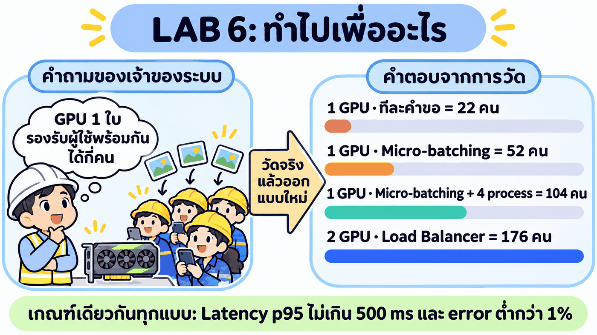
ทุกแบบใช้เกณฑ์เดียวกัน: Latency p95 ≤ 500 ms และ error < 1%
บทนี้มี 3 ภาค: พื้นฐานและทฤษฎี, LAB ขั้นที่ 1–9 และสกิลเวอร์ชัน 0
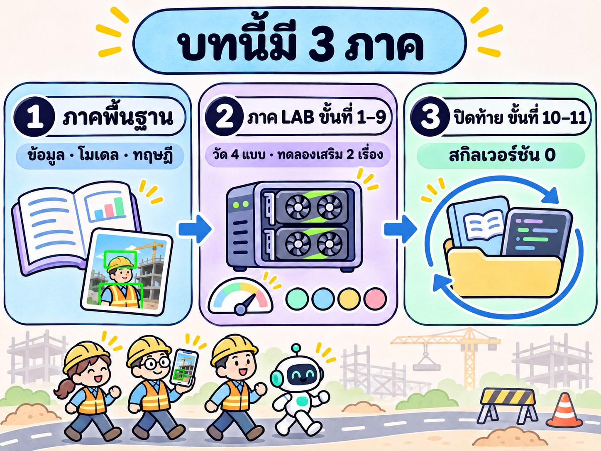
ภาคพื้นฐานมีทฤษฎี 9 ข้อ · ภาค LAB วัด 4 แบบและทดลองเสริม 2 เรื่อง · ขั้นที่ 10–11 เก็บงานทั้งหมดเป็นสกิล
วิธีใช้สไลด์ชุดนี้
เลื่อนหน้า
กด → หรือ Space ไปต่อ · ← ย้อนกลับ · O สารบัญ · F เต็มจอ
คลิกภาพเพื่อขยาย
ภาพคำตอบของ Claude Code ในสไลด์เป็นส่วนที่ตัดมา ลิงก์ใต้ภาพเปิดภาพคำตอบเต็ม
ปุ่มคัดลอกพรอมต์
หน้าพรอมต์ทุกหน้ามีปุ่ม คัดลอกพรอมต์ทั้งหมด ได้ข้อความตรงกับ README ทุกตัวอักษร แม้พรอมต์ถูกแบ่งแสดง 2 หน้า
รายการตรวจผล
หลังรันแต่ละขั้น ให้ติ๊กสิ่งที่เห็นในผลของคุณ เบราว์เซอร์จำค่าที่ติ๊กไว้ แล้วเทียบกับผลของผู้สอนใต้รายการ
โจทย์ ข้อมูล โมเดล และทฤษฎีที่ต้องรู้
ก่อนวัด ต้องรู้ว่าวัดอะไร ด้วยเกณฑ์อะไร และตัวเลขแต่ละตัวหมายถึงอะไร
GPU 1 ใบ รองรับผู้ใช้พร้อมกันได้กี่คน แล้วออกแบบระบบอย่างไรให้รับได้มากขึ้น
เราไม่เดา แต่วัดจริง 4 แบบบนเครื่องเดียวกัน ด้วยเกณฑ์เดียวกัน
ข้อมูลทดสอบคือชุดคำขอ: รูปหน้างานก่อสร้าง 6 รูป ที่ผู้ใช้จำลองทุกคนส่งวนไป
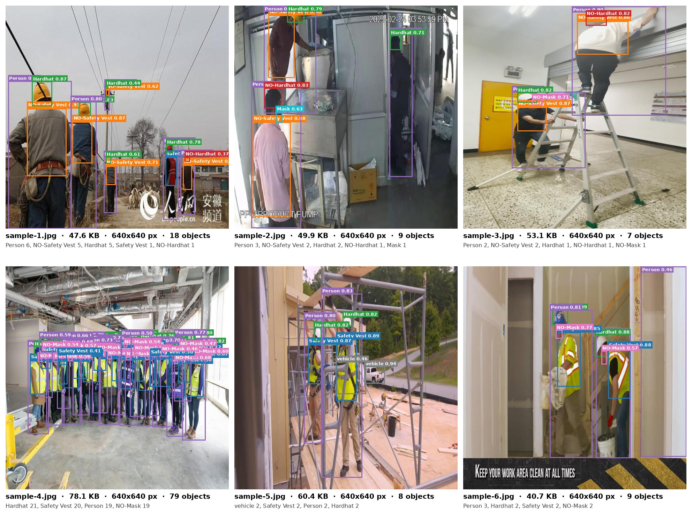
รูป 640 × 640 px ขนาด 40.7–78.1 KB จาก Test Set ของ Construction Site Safety รุ่น 28 (CC BY 4.0) · sample-4 มีวัตถุ 79 ชิ้น หนักกว่ารูปอื่น
คำขอ 1 ครั้ง: ส่งรูปพร้อม API key ไปที่ POST /v1/detect แล้วได้ JSON กลับ
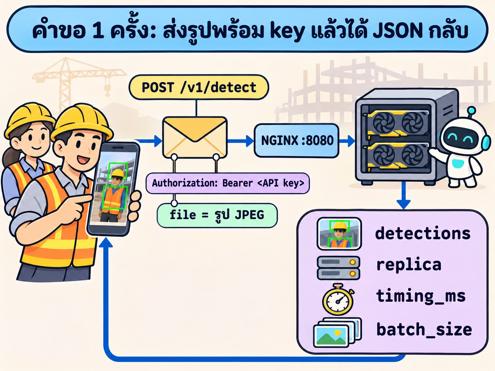
{"detections": [
{"class": "Person", "confidence": 0.8999, "box": [311.5, 2.2, 581.0, 315.2]},
{"class": "NO-Hardhat", "confidence": 0.8208, "box": [351.0, 30.0, 411.0, 57.1]}, ...],
"count": 7, "replica": "gpu0-single",
"timing_ms": {"decode": 6.72, "queue": 0.07, "inference": 23.35},
"batch_size": 1, "image": {"width": 640, "height": 640}}ตัวอย่างจริงของ sample-3.jpg (ตัดรายการวัตถุให้สั้น) · box คือกรอบ [x1, y1, x2, y2] เป็นพิกเซล · confidence ขั้นต่ำ 0.35
โมเดล YOLO11s จาก LAB 1: รับภาพ 1 รูป ตอบเป็นกรอบ คลาส และ Confidence
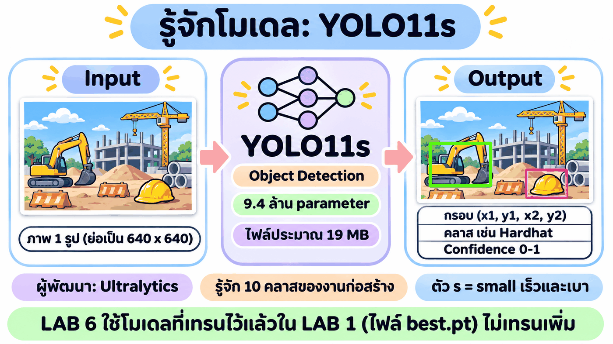
โมเดลเล็กแบบนี้ใช้ GPU เพียงราว 15 ms ต่อรูป · งานส่วนใหญ่ของ 1 คำขอจึงอยู่ที่ CPU (อ่านรูป ถอด JPEG เตรียมรูป แปลงผล) ซึ่งเป็นกุญแจของทั้ง LAB
1 · เพิ่มผู้ใช้หลังระบบอิ่มตัว ได้คิวที่ยาวขึ้น ไม่ได้ Throughput เพิ่ม
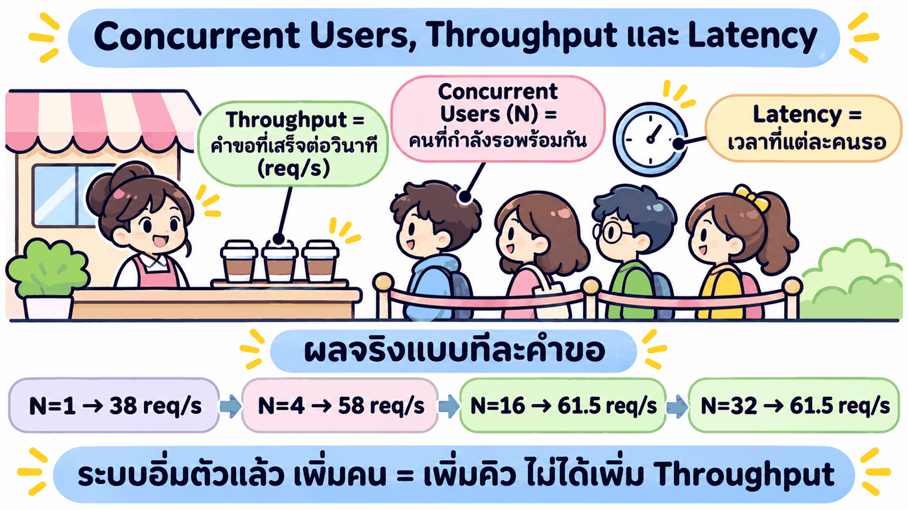
Latency เฉลี่ย ≈ N ÷ Throughput (กฎของ Little) · ที่ N=32: 32 ÷ 61.5 ≈ 520 ms วัดจริง p50 = 515 ms
2 · ค่าเฉลี่ยซ่อนคนที่โชคร้าย เกณฑ์คุณภาพจึงตั้งที่ p95
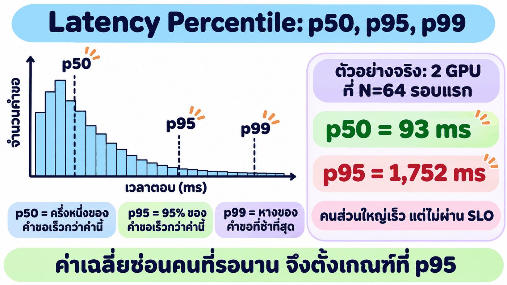
2 GPU ที่ N=64 รอบแรก p50 = 93 ms แต่ p95 = 1,752 ms · วัดซ้ำ 3 ครั้ง p95 ได้ 147 / 145 / 149 ms
3 · รองรับได้ N คน คือ N สูงสุดที่ผ่าน SLO โดยทุกระดับที่ต่ำกว่าก็ผ่านด้วย
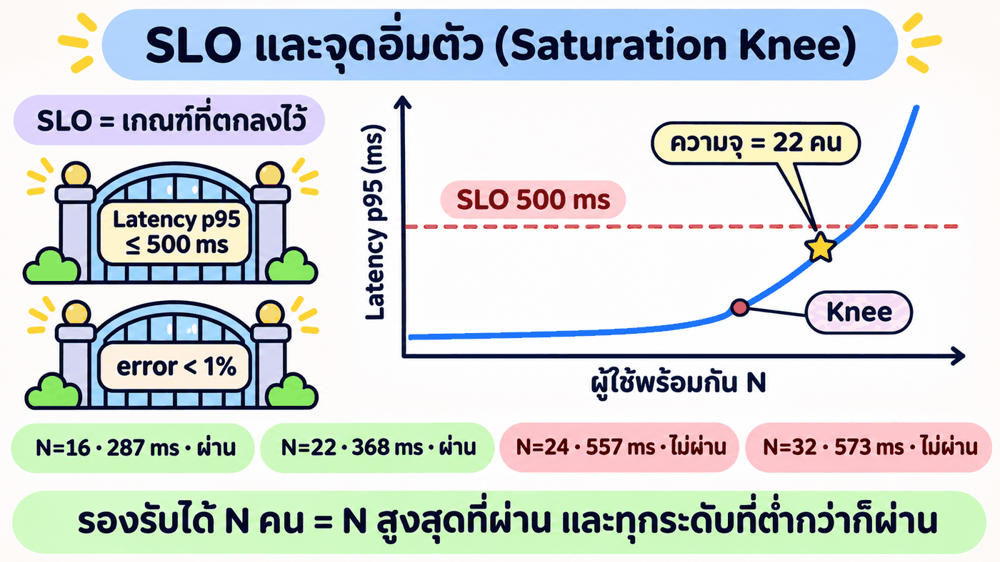
เกณฑ์ SLO เป็นการตัดสินใจทางธุรกิจ · ถ้าผ่อนเกณฑ์เป็น p95 ≤ 1 วินาที ทุกแบบจะ "รับได้" มากขึ้นทันทีโดยระบบไม่ได้เร็วขึ้นเลย
4 · Closed-loop: ผู้ใช้ N คนส่งรูป รอคำตอบ แล้วส่งรูปถัดไปทันที
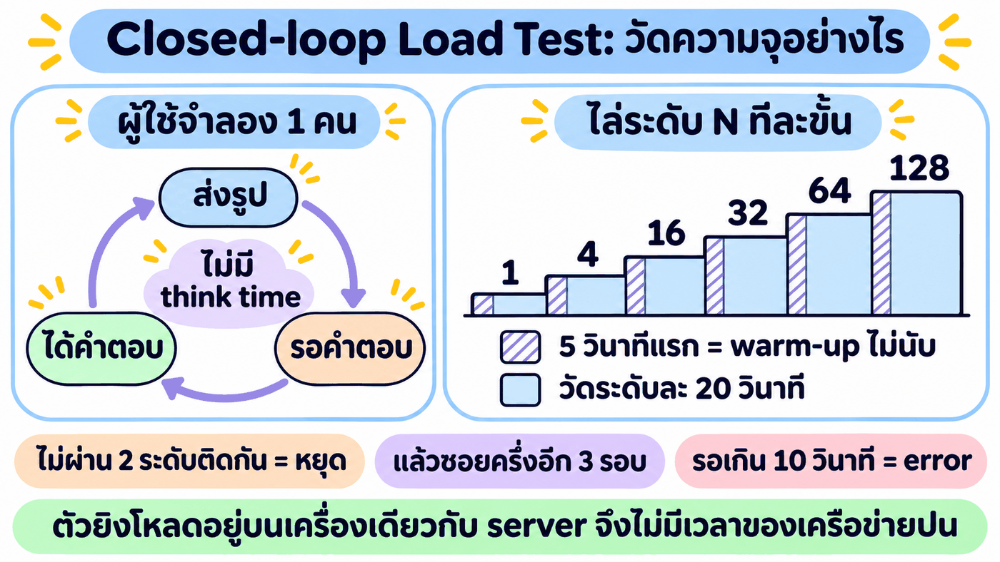
ตัวยิงโหลดอยู่บนเครื่องเดียวกับ server · เรียกจากนอกเครื่องใช้ราว 1.1 วินาทีต่อคำขอ แต่ยิงในเครื่องใช้ 26–38 ms
4 · วัดครั้งเดียวเชื่อไม่ได้: ทั้ง 2 เหตุการณ์ ผลหลังวัดซ้ำต่างจากผลครั้งแรก
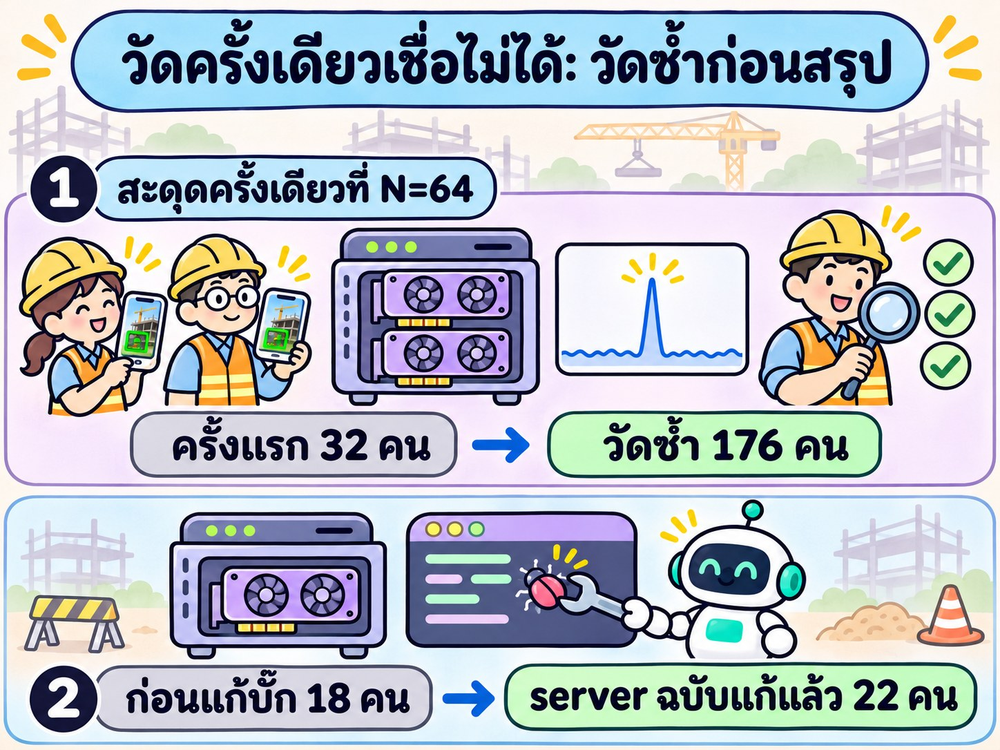
ระบบ 2 GPU: N=64 วัดซ้ำ 3 ครั้งผ่านหมด และ N=128, 160, 176 ผ่าน · Baseline: 18 คน 39.5 req/s → 22 คน 63 req/s · ระดับที่ไม่ผ่านเพียงครั้งเดียวขณะที่ระดับสูงกว่าผ่าน ให้วัดซ้ำก่อนสรุป และรายงานทั้งสองค่า
5 · แบบทีละคำขอ GPU ทำงานเพียง 20%: คอขวดคือ Python process เดียว ไม่ใช่ GPU
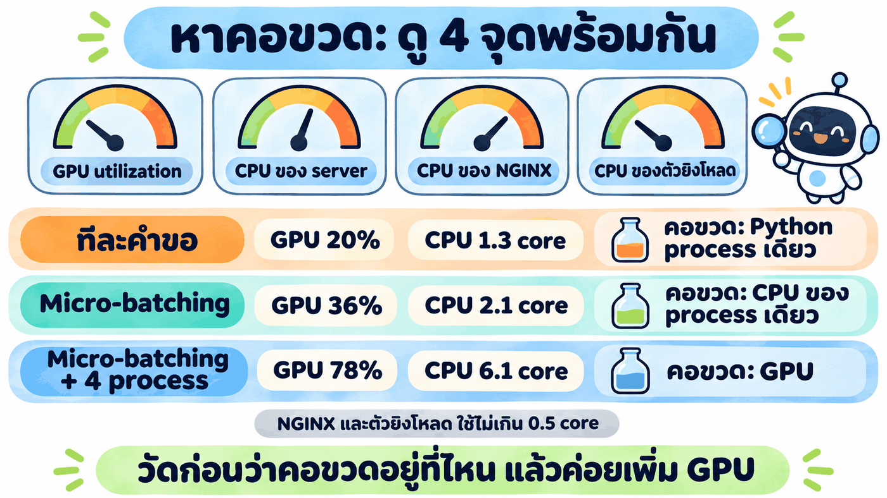
เครื่องที่เช่าแสดง CPU 192 core แต่เครื่องเช่าของเราได้ใช้จริงราว 27 core · 2 GPU ใช้ไป 12.4 core · เครื่องที่ได้ CPU น้อยกว่านี้มากจะตันที่ CPU ก่อน GPU จึงควรดูจำนวน core ที่ได้ใช้จริงตอนเลือกเครื่อง
6 · ปัญหา: server เรียกโมเดลทีละรูป คำขอต่อคิวทั้งที่ GPU ยังว่าง
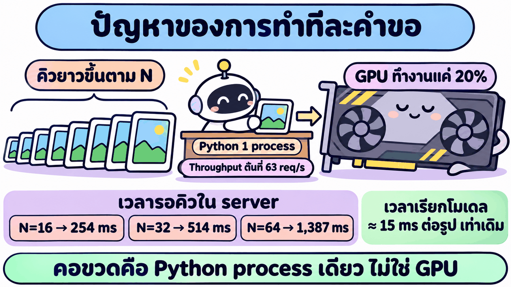
เวลาเรียกโมเดลราว 15 ms ต่อรูปเท่าเดิม แต่ เวลารอคิว โตตาม N
6 · Micro-batching: รวมคำขอที่มาใกล้กันเป็นชุดเดียว แล้วเรียกโมเดลครั้งเดียว
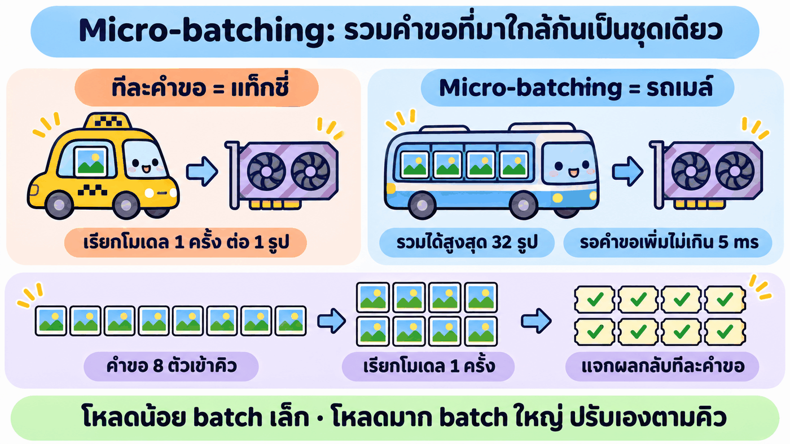
รวมได้สูงสุด 32 รูป รอคำขอเพิ่มไม่เกิน 5 ms · ขนาด batch ปรับตามโหลดเอง
6 · ผล: GPU ใบเดิมรองรับ 22 → 52 คน (2.4 เท่า)
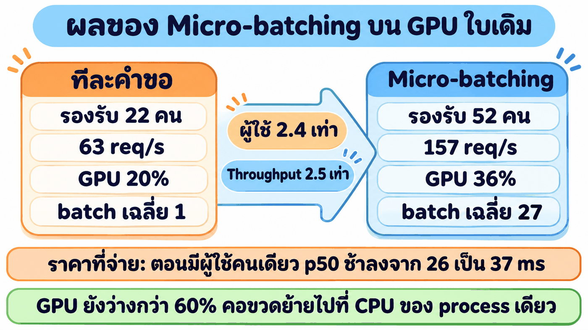
batch สูงสุดใหญ่ขึ้นไม่ได้ดีขึ้นเสมอ: batch ใหญ่ใช้เวลาเรียกโมเดลนานขึ้น (ที่ N=32 แบบ 1 process เรียกโมเดลครั้งละราว 148 ms) และใช้ VRAM เพิ่ม (0.9 GB → 5.9 GB ต่อ process)
7 · หลาย process ต่อ GPU 1 ใบ: 52 → 104 คน เพราะ Python 1 process ใช้ CPU ได้ทีละ 1 core
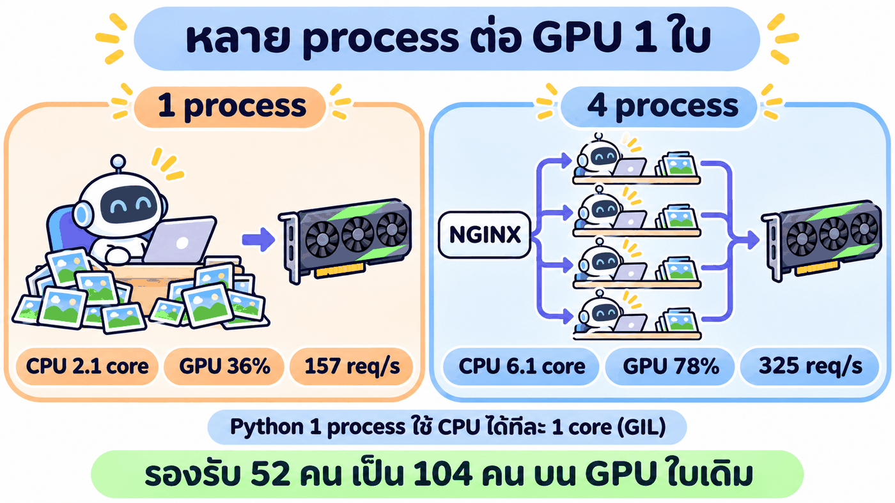
ข้อ 6 และ 7 คือการ ใช้ GPU ใบเดิมให้เต็ม ก่อนเพิ่มใบ: 22 → 104 คน (4.7 เท่า) โดยค่าเช่าเท่าเดิม
8 · Load Balancer คือประตูเดียวที่แจกงานให้หลาย replica
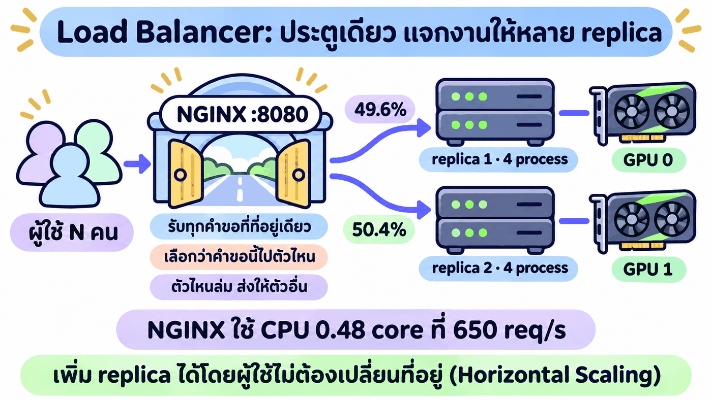
NGINX ใช้ CPU 0.48 core ที่ 650 req/s จึงไม่ใช่คอขวด · คำขอกระจาย 49.6% / 50.4%
8 · เมื่อมี replica ช้า least_conn ส่งงานตามงานค้าง จึงดีกว่าการแจกวนเท่ากัน
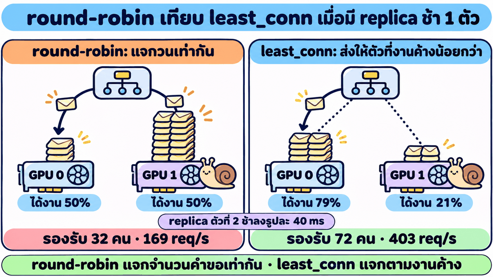
เมื่อ replica เร็วเท่ากัน LAB นี้ ยังสรุปไม่ได้ ว่า least_conn ดีกว่า ดูเหตุผลในขั้นที่ 7
8 · เมื่อ replica ล่มกลางทาง NGINX ต้องส่งคำขอที่ล้มต่อให้ตัวอื่น (retry)
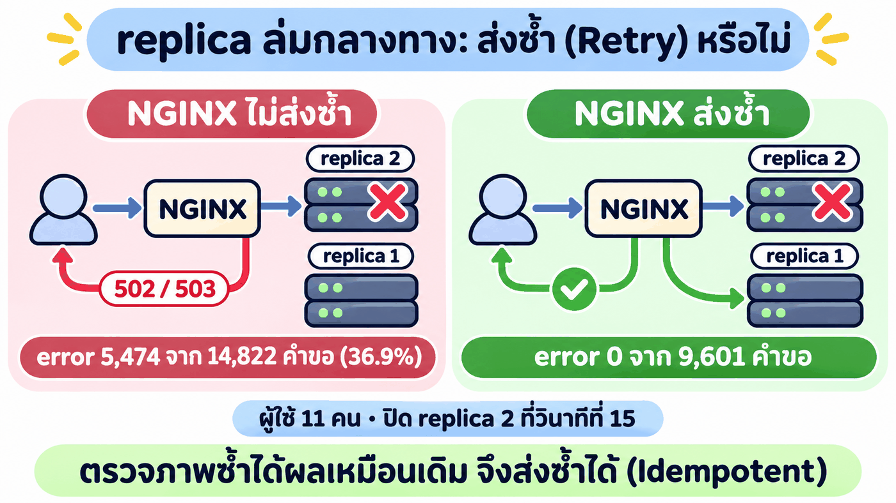
ใน LAB ทุกส่วน (NGINX, server ทุก process, ตัวยิงโหลด) อยู่บนเครื่องเช่าเครื่องเดียว เพื่อให้ตัวแปรเดียวที่ต่างคือจำนวน GPU · ระบบจริงแยก Load Balancer กับ replica ไว้คนละเครื่อง ต้องบวกเวลาเครือข่ายระหว่างเครื่อง และ Load Balancer เองต้องมีตัวสำรอง
9 · Throughput เพิ่ม 2.00 เท่า แต่ความจุเพิ่ม 1.69 เท่า เพราะความจุตัดสินด้วย p95
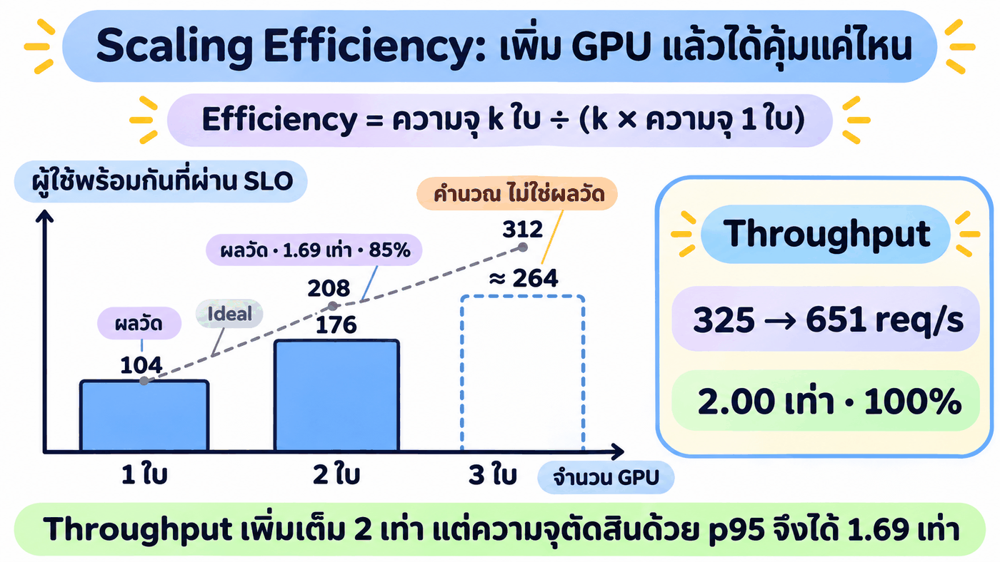
Speedup = ความจุ k ใบ ÷ ความจุ 1 ใบ · Efficiency = Speedup ÷ k · 3 ใบเป็นค่าคำนวณ ไม่ใช่ผลวัด
11 ขั้น 11 พรอมต์ บนเครื่องเช่าเครื่องเดียว
ขั้นที่ 1–9 คืองานหลัก · ขั้นที่ 10–11 เก็บงานทั้งหมดเป็นสกิลเวอร์ชัน 0
ทุกขั้นคือ 1 พรอมต์ และโค้ดทุกไฟล์ AI เขียนให้จากโฟลเดอร์ว่าง
ทำตามลำดับขั้นที่ 1 → 11 ให้ครบในรอบเดียว
ก่อนเริ่ม LAB ต้องเตรียม 5 อย่าง
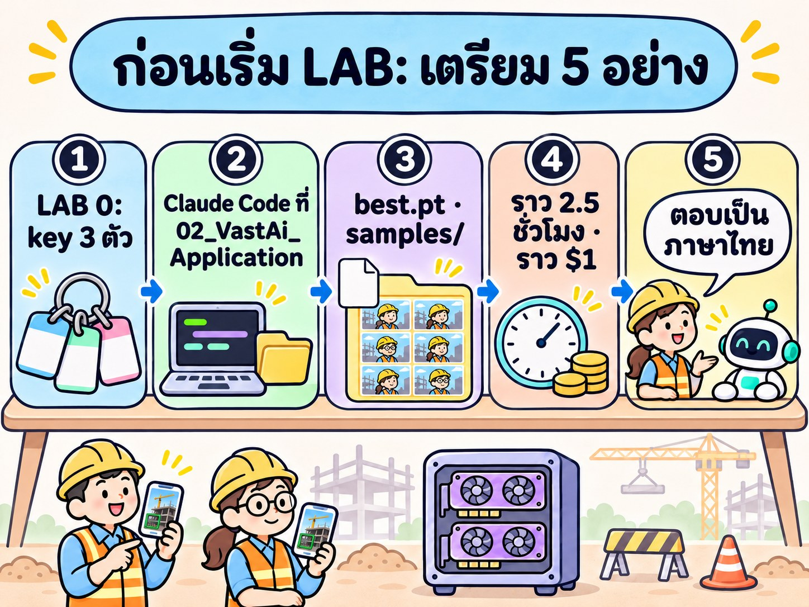
key 3 ตัวมาจาก LAB 0 · โค้ดที่ AI เขียนจะอยู่ใน lab6_image_api/code/ ซึ่งตอนเริ่มยังไม่มี · เครื่องเปิดค้างและคิดเงินตั้งแต่ขั้นที่ 1 ถึงขั้นที่ 9
วัด 4 แบบบนเครื่องเดียวกัน ด้วยเกณฑ์ p95 ≤ 500 ms และ error < 1%
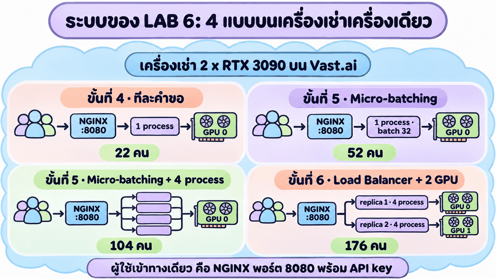
ไล่ N = 1, 4, 16, 32, 64, 128, 256, 512, 1024 ระดับละ 20 วินาที ไม่นับ 5 วินาทีแรก · ตัวยิงโหลดรันบนเครื่องเดียวกับ server · เครื่อง RTX 3090 2 ใบ เพดาน $0.60 ต่อชั่วโมง (ได้จริง $0.395) ได้ใช้ CPU ราว 27 core
เช่าเครื่อง 2 GPU
AI ค้นหาเครื่องตามเกณฑ์ เช่า รอจนพร้อม แล้วเข้าไปตรวจว่าเห็น GPU ครบ 2 ใบ
เวลาจริง: ใช้เวลา 10 นาที (เครื่องนี้โหลด image นานราว 8 นาที) · ผลจริง: RTX 3090 2 ใบ $0.395 ต่อชั่วโมง · ได้ใช้ CPU 27.4 cores
ขั้นที่ 1: เช่าเครื่อง RTX 3090 2 ใบ ตามเกณฑ์
vapp-lab6พรอมต์ · ขั้นที่ 1 · เช่าเครื่อง 2 GPUCopy & Paste
ทำงานใน container `multi-account` โฟลเดอร์ /workspace/vastapp_lab ด้วยสกิล vastai
เช่าเครื่อง GPU สำหรับวัดความจุของ API ตรวจภาพ
1. เช่าเครื่องที่มี RTX 3090 2 ใบในเครื่องเดียว ราคารวมไม่เกิน $0.60 ต่อชั่วโมง ตั้งป้ายเครื่องว่า vapp-lab6
2. เลือกเครื่อง verified ที่เน็ตเร็ว มี CPU 24 cores ขึ้นไป ไม่อยู่ในจีน แล้วเอาเครื่องที่ถูกที่สุด
3. ใช้ image PyTorch 2.8 ที่มี CUDA 12.8 disk 40 GB และเปิดพอร์ต 8080 ไว้ให้ผู้ใช้เรียก API
4. รอจนเครื่องพร้อมและเข้าไปเห็น GPU ครบ 2 ใบ ถ้าเกิน 10 นาทียังไม่พร้อม ให้ลบแล้วเช่าเครื่องอื่น
กุญแจ SSH อยู่ที่ /workspace/vastai_lab/Devtool_SSH/devtoolSSH
สรุปเป็นตารางภาษาไทย: GPU · ราคาต่อชั่วโมง · ที่ตั้ง · CPU cores · เวลาที่รอจนเครื่องพร้อม แล้วบอกว่าเครื่องยังเปิดอยู่ตรวจผลของคุณ · ขั้นที่ 1 · เช่าเครื่อง 2 GPUChecklist
ได้ RTX 3090 2 ใบ ราคา $0.395 ต่อชั่วโมง และได้ใช้ CPU จริง 27.4 coreคำตอบจริง
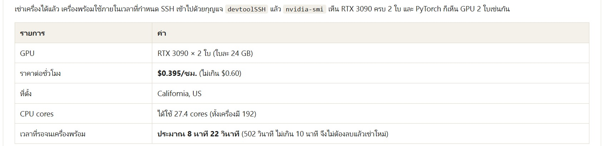
ส่วนหนึ่งของคำตอบจริง · เปิดภาพคำตอบเต็ม
เขียน AI server ตรวจภาพ
AI เขียน server.py (FastAPI) พร้อมตัวช่วย run_single.sh test_api.py make_grid.py นำขึ้นเครื่อง เปิดบน GPU ใบแรก ทดสอบจากนอกเครื่อง และทำภาพชุดรูปที่จะใช้ยิงโหลด
เวลาจริง: ใช้เวลา 12 นาที 42 วินาที · ผลจริง: 6 รูปได้คำตอบครบ · ไม่มี key ได้ 401 · โมเดลราว 24 ms ต่อรูป
ขั้นที่ 2: AI server รับรูป แล้วตอบเป็น JSON
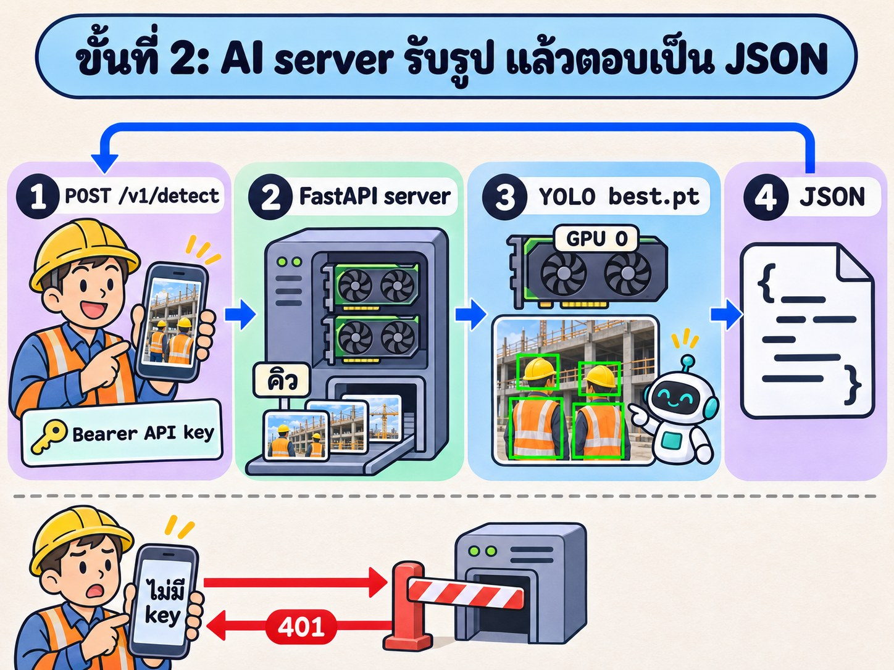
POST /v1/detect (ช่อง file) พร้อม API key แบบ Bearer · ไม่มีหรือผิดได้ 401best.pt ตรวจที่ขนาด 640 ความมั่นใจขั้นต่ำ 0.35 บน GPU ใบแรกdetections · replica · timing_ms · batch_size · มี GET /health ไว้เช็กว่าพร้อมพรอมต์ · ขั้นที่ 2 · เขียน AI server ตรวจภาพCopy & Paste
ทำงานใน container `multi-account` โฟลเดอร์ /workspace/vastapp_lab ด้วยสกิล vastai
เครื่องที่ใช้คือเครื่องป้าย vapp-lab6 · กุญแจ SSH อยู่ที่ /workspace/vastai_lab/Devtool_SSH/devtoolSSH
เขียน AI server ตรวจภาพ แล้วลองเปิดบน GPU 1 ใบของเครื่องที่เช่า
1. เขียน server ด้วย FastAPI ไว้ที่ lab6_image_api/code/server.py ใช้โมเดล lab6_image_api/best.pt (โมเดล YOLO ตรวจอุปกรณ์ความปลอดภัยที่เทรนใน LAB 1) ตรวจภาพที่ขนาด 640 ความมั่นใจขั้นต่ำ 0.35
2. รับรูปที่ POST /v1/detect (ช่องชื่อ file) ต้องมี API key แบบ Bearer ถ้าไม่มีหรือผิดให้ตอบ 401 และมี GET /health ไว้เช็กว่าพร้อม
3. ตอบเป็น JSON: รายการวัตถุที่เจอ (class, confidence, box) · ชื่อ replica ที่ตอบ · เวลาภายในเป็น ms (แปลงรูป, รอคิว, เรียกโมเดล) และขนาด batch ของรอบนั้น
4. server 1 process เรียกโมเดลได้ทีละครั้ง คำขอที่มาระหว่างนั้นเข้าคิวรอ และตั้งค่าได้ 2 โหมด: ทีละคำขอ (batch = 1) กับ Micro-batching ที่รวมคำขอในคิวได้สูงสุด 32 รูปต่อการเรียกโมเดล 1 ครั้ง โดยรอคำขอเพิ่มไม่เกิน 5 ms
5. คำขอจริงต้องไม่สะดุดเพราะโมเดลเจอขนาด batch ที่ยังไม่เคยเจอ: ตอนเปิด server ให้อุ่นโมเดลครบทุกขนาด batch ตั้งแต่ 1 ถึงค่าสูงสุดของโหมดนั้น แล้ว /health จึงตอบว่าพร้อม
6. ติดตั้งสิ่งที่ต้องใช้ นำโค้ด โมเดล และรูปใน lab6_image_api/samples ขึ้นเครื่อง เปิด server 1 process บน GPU ใบแรกที่พอร์ต 8080 โหมดทีละคำขอ
7. ทดสอบจากนอกเครื่อง: เรียก /health · ส่งรูปทั้ง 6 รูปพร้อม key · ส่งแบบไม่มี key ต้องได้ 401
8. โชว์ชุดรูปที่จะใช้ยิงโหลด: ทำภาพตาราง 6 รูป วาดกรอบและชื่อคลาสที่โมเดลตรวจได้ทับ กำกับขนาดไฟล์และขนาดภาพใต้แต่ละรูป เก็บที่ lab6_image_api/results/dataset_samples.jpg
ห้ามแสดงค่า key · ตอบเป็นภาษาไทย: อธิบายโค้ด 3–5 บรรทัด · คำขอ 1 ครั้งส่งอะไรไปและได้อะไรกลับ (ยก JSON จริง 1 ตัวอย่าง อธิบายแต่ละช่อง) · ตารางรูป: ขนาด · จำนวนวัตถุต่อคลาส
สรุปผลทดสอบและเวลาที่โมเดลใช้ต่อรูป แล้วบอกว่าเครื่องยังเปิดอยู่ตรวจผลของคุณ · ขั้นที่ 2 · เขียน AI server ตรวจภาพChecklist
เวลาภายใน server ราว 30 ms แต่วัดจากนอกเครื่องได้ราว 1.1 วินาทีคำตอบจริง
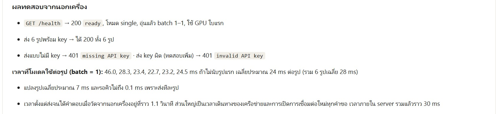
ส่วนหนึ่งของคำตอบจริง · เปิดภาพคำตอบเต็ม
เขียนตัวเปิดระบบ: replica + NGINX Load Balancer
AI เขียน cluster.sh ที่เปิด/ปิด/ดูสถานะระบบ ติดตั้ง NGINX แล้วเปิดระบบแบบพื้นฐาน (replica 1 ตัว 1 process batch = 1)
เวลาจริง: ใช้เวลา 11 นาที 10 วินาที · ผลจริง: ผู้ใช้เข้าได้ทางเดียวคือ NGINX พอร์ต 8080
ขั้นที่ 3: ผู้ใช้เข้าทาง NGINX พอร์ต 8080 จุดเดียว
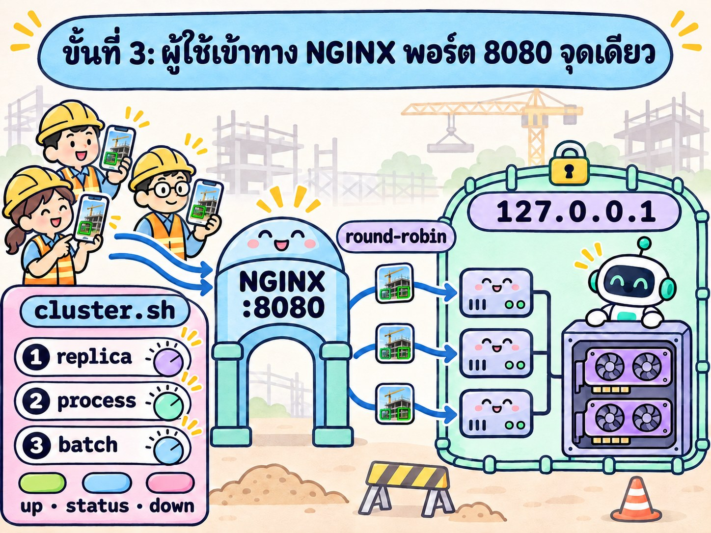
cluster.sh เปิดระบบใหม่ได้ด้วย ค่า 3 ตัว: จำนวน replica · process ต่อ replica · ขนาด batch สูงสุด127.0.0.1) ยิงตรงจากนอกเครื่องไม่ได้พรอมต์ · ขั้นที่ 3 · เขียนตัวเปิดระบบ: replica + NGINX Load BalancerCopy & Paste
ทำงานใน container `multi-account` โฟลเดอร์ /workspace/vastapp_lab ด้วยสกิล vastai
เครื่องที่ใช้คือเครื่องป้าย vapp-lab6 · กุญแจ SSH อยู่ที่ /workspace/vastai_lab/Devtool_SSH/devtoolSSH
เขียนตัวเปิดระบบที่ให้ผู้ใช้เข้าทาง Load Balancer จุดเดียว แล้วเปิดระบบแบบพื้นฐาน
1. เขียนไว้ที่ lab6_image_api/code/cluster.sh ให้สั่งเปิดระบบใหม่ได้ด้วยค่า 3 ตัว: จำนวน replica (1–2 ตัว ตัวละ 1 GPU) · จำนวน process ของ server ต่อ replica · ขนาด batch สูงสุด
2. ตั้ง NGINX เป็น Load Balancer ที่พอร์ต 8080 แจกคำขอให้ server ทุก process แบบ round-robin (แจกวนทีละตัว) ส่วน server ฟังพอร์ตภายในเครื่องเท่านั้น
3. API key สุ่มครั้งแรกแล้วใช้ค่าเดิมทุกครั้งที่เปิดใหม่ · มีคำสั่งดูสถานะ (replica ไหนเปิดอยู่ ตั้งค่าอะไร) และคำสั่งปิดทั้งระบบ
4. ติดตั้ง NGINX บนเครื่อง ปิด server ที่เปิดไว้จากขั้นก่อน แล้วเปิดระบบแบบพื้นฐาน: replica 1 ตัว 1 process batch = 1 (คำสั่งเปิดต้องรอจน server ทุก process ตอบว่าพร้อมก่อนจึงบอกว่าเปิดเสร็จ)
5. ทดสอบจากนอกเครื่องผ่านพอร์ต 8080: /health · ส่งรูป 1 รูปพร้อม key · ส่งแบบไม่มี key ต้องได้ 401
ห้ามแสดงค่า key · ตอบเป็นภาษาไทย: อธิบายโค้ด 3–5 บรรทัด วาดแผนภาพข้อความว่าคำขอเดินทางผ่านอะไรบ้าง สรุปผลทดสอบ แล้วบอกว่าเครื่องยังเปิดอยู่ตรวจผลของคุณ · ขั้นที่ 3 · เขียนตัวเปิดระบบ: replica + NGINX Load BalancerChecklist
คำขอทุกครั้งผ่าน NGINX พอร์ต 8080 ส่วนพอร์ต 9000 ของ server เข้าจากนอกเครื่องไม่ได้คำตอบจริง
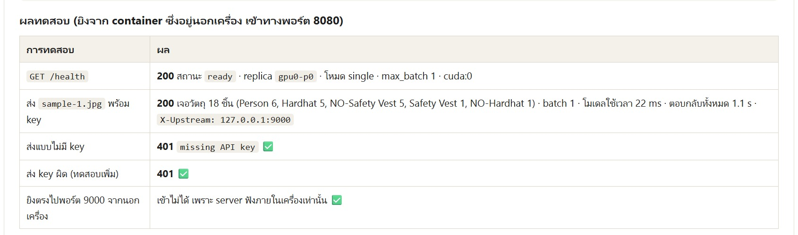
cluster.sh มีคำสั่ง up, status และ down · การเพิ่ม process (ขั้นที่ 5) และ replica (ขั้นที่ 6) ใช้คำสั่งเดิม เปลี่ยนเพียงตัวเลข 3 ตัวX-Upstream ในคำตอบบอกว่า process ใดเป็นผู้ตอบ ใช้ตรวจการแจกงานในขั้นถัดไปส่วนหนึ่งของคำตอบจริง · เปิดภาพคำตอบเต็ม
เขียนตัวยิงโหลด แล้ววัด Baseline: GPU 1 ใบรับได้กี่คน
AI เขียนตัวยิงโหลด loadgen.py แล้ววัดระบบแบบพื้นฐาน (ทีละคำขอ) ตั้งชื่อผลว่า base1
เวลาจริง: ใช้เวลา 10 นาที 38 วินาที · ผลจริง: GPU 1 ใบ แบบทีละคำขอ รองรับ 22 คน (63 req/s)
ขั้นที่ 4: ตัวยิงโหลดจำลองผู้ใช้ N คน แล้วไล่ N จนเกินเกณฑ์
loadgen.py รัน บนเครื่องเดียวกับ server ยิงเข้าทาง Load Balancer · รอเกิน 10 วินาทีนับเป็น errorbase1พรอมต์ · ขั้นที่ 4 · เขียนตัวยิงโหลด แล้ววัด Baseline: GPU 1 ใบรับได้กี่คนCopy & Paste
ทำงานใน container `multi-account` โฟลเดอร์ /workspace/vastapp_lab ด้วยสกิล vastai
เครื่องที่ใช้คือเครื่องป้าย vapp-lab6 · กุญแจ SSH อยู่ที่ /workspace/vastai_lab/Devtool_SSH/devtoolSSH
เขียนตัวยิงโหลด แล้ววัดว่า API แบบพื้นฐานบน GPU 1 ใบ รับผู้ใช้พร้อมกันได้กี่คน
1. เขียนไว้ที่ lab6_image_api/code/loadgen.py รันบนเครื่องเดียวกับ server ยิงเข้าทาง Load Balancer: จำลองผู้ใช้ N คน แต่ละคนส่งรูปตัวอย่างวนไป ได้คำตอบแล้วส่งรูปถัดไปทันที (ไม่มี think time) รอเกิน 10 วินาทีนับเป็น error
2. ไล่ N = 1, 4, 16, 32, 64, 128, 256, 512, 1024 ระดับละ 20 วินาที โดย 5 วินาทีแรกเป็น warm-up ไม่นับ · หยุดเมื่อไม่ผ่านเกณฑ์ 2 ระดับติดกัน แล้วซอยครึ่งหา N ที่พอดีเกณฑ์อีก 3 รอบ
3. เกณฑ์ SLO: p95 ≤ 500 ms และ error < 1% · "รองรับได้ N คน" = N สูงสุดที่ผ่านเกณฑ์ โดยทุกระดับที่ต่ำกว่าก็ผ่าน
4. วัดต่อระดับ: Throughput · p50 p95 p99 · error · GPU utilization ทุกใบ · CPU (กี่ core) ที่ server, NGINX และตัวยิงโหลดใช้ · คำขอที่แต่ละ replica ตอบ · เวลาภายใน server และขนาด batch เฉลี่ย · ตัวยิงโหลดใช้หลาย process
5. ก่อนเริ่มวัดให้ยิงอุ่นระบบสั้น ๆ โดยไม่นับผล · ตั้งชื่อผลได้ บันทึกเป็น JSON ชื่อละไฟล์ในโฟลเดอร์ results บนเครื่อง และพิมพ์ผลทีละระดับ จบแล้วพิมพ์ความจุกับคำว่า DONE
6. ตรวจว่าระบบเปิดแบบพื้นฐานอยู่ (replica 1 ตัว 1 process batch = 1) แล้ววัด ตั้งชื่อผลว่า base1 รันเป็นงานเบื้องหลังราว 4 นาที เช็กจนเห็น DONE
ตอบเป็นภาษาไทย: อธิบายโค้ด 3–5 บรรทัด · สรุปตารางทุกระดับ N และประโยค "GPU 1 ใบ รองรับผู้ใช้พร้อมกันได้ N คน ที่ p95 ≤ 500 ms" บอกว่าตอนเต็มความจุ GPU ทำงานกี่ % คอขวดอยู่ที่ไหน แล้วบอกว่าเครื่องยังเปิดอยู่ตรวจผลของคุณ · ขั้นที่ 4 · เขียนตัวยิงโหลด แล้ววัด Baseline: GPU 1 ใบรับได้กี่คนChecklist
ผลจริง base1: p95 ผ่านถึง N=22 แล้วเกิน 500 ms ตั้งแต่ N=24ตารางหลัก
| N | Throughput (req/s) | p50 / p95 / p99 (ms) | GPU 0 | CPU ของ server | เวลาใน server (เรียกโมเดล) | SLO |
|---|---|---|---|---|---|---|
| 1 | 38.3 | 26 / 33 / 36 | 12% | 0.96 core | 21.5 ms (16.4) | ✅ ผ่าน |
| 4 | 58.4 | 68 / 78 / 82 | 18% | 1.30 core | 62.6 ms (15.5) | ✅ ผ่าน |
| 16 | 61.5 | 257 / 287 / 336 | 20% | 1.35 core | 254.1 ms (14.8) | ✅ ผ่าน |
| 20 (ซอยครึ่ง) | 56.3 | 331 / 450 / 457 | 17% | 1.30 core | 350.5 ms (16.2) | ✅ ผ่าน |
| 22 (ซอยครึ่ง) | 63.0 | 348 / 368 / 376 | 20% | 1.32 core | 343.3 ms (14.4) | ✅ ผ่าน |
| 24 (ซอยครึ่ง) | 46.3 | 526 / 557 / 563 | 14% | 1.25 core | 514.7 ms (20.1) | ❌ ไม่ผ่าน |
| 32 | 61.5 | 515 / 573 / 620 | 19% | 1.38 core | 513.9 ms (14.9) | ❌ ไม่ผ่าน |
| 64 | 45.9 | 1,392 / 1,459 / 1,483 | 15% | 1.27 core | 1,387.4 ms (20.5) | ❌ ไม่ผ่าน |
เวลาเรียกโมเดลคงที่ราว 15 ms ส่วนเวลารอคิวโตตาม N
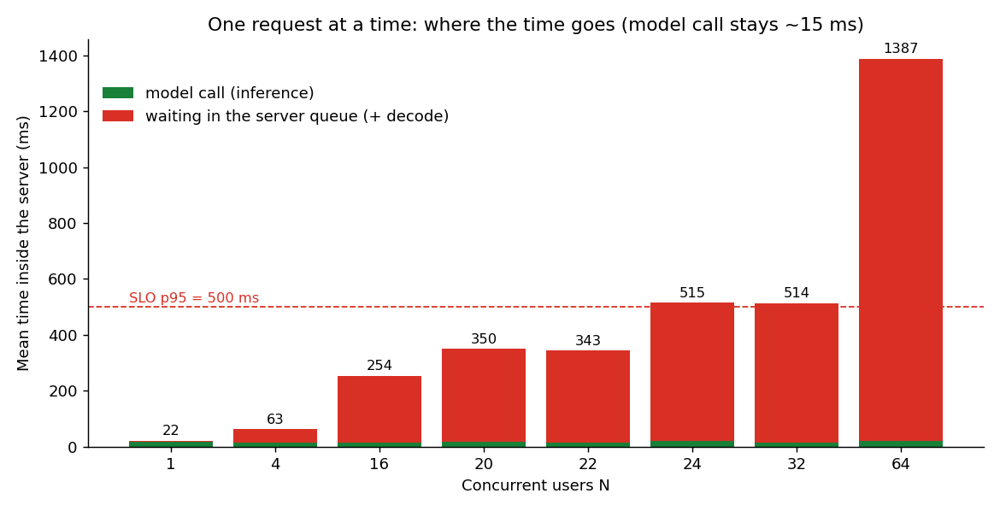
ดูแท่งสีแดง: เวลารอใน server โตจาก 254 ms (N=16) เป็น 514 ms (N=32) และ 1,387 ms (N=64)
GPU 1 ใบแบบทีละคำขอรองรับ 22 คน ขณะที่ GPU ทำงานเพียงราว 20%คำตอบจริง
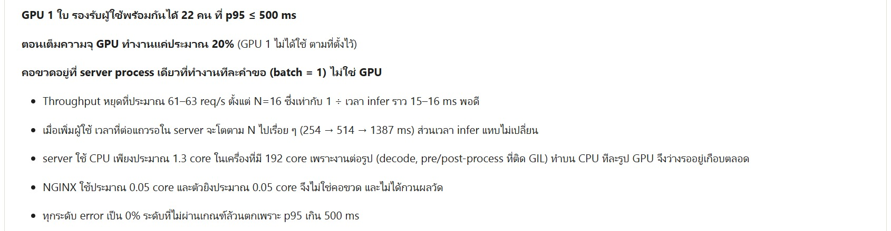
ส่วนหนึ่งของคำตอบจริง · การวัดซ้ำด้วยพรอมต์เดิม · การวัดครั้งแรกได้ 18 คน / 39.5 req/s บน server ที่ยังมีบั๊ก · เปิดภาพคำตอบเต็ม
ใช้ GPU ใบเดิมให้คุ้มขึ้น: Micro-batching และหลาย process
ขั้นนี้ไม่เขียนโค้ดใหม่ · AI เปิดระบบใหม่ 2 แบบด้วยตัวเปิดระบบเดิม แล้ววัดซ้ำด้วยตัวยิงโหลดเดิม ตั้งชื่อผลว่า batch1 และ gpu1
เวลาจริง: ใช้เวลา 31 นาที (รวมเวลาที่ AI หาและแก้บั๊กใน server ที่ตัวเองเขียน แล้ววัดใหม่) · ผลจริง: GPU ใบเดิม 22 → 52 → 104 คน (4.7 เท่า) ค่าเช่าเท่าเดิม
ขั้นที่ 5: ไม่เขียนโค้ดใหม่ เปิดระบบใหม่ 2 แบบบน GPU ใบเดิม แล้ววัดซ้ำ
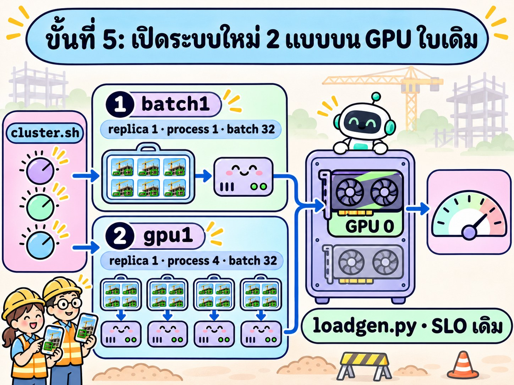
batch1gpu1base1พรอมต์ · ขั้นที่ 5 · ใช้ GPU ใบเดิมให้คุ้มขึ้น: Micro-batching และหลาย processCopy & Paste
ทำงานใน container `multi-account` โฟลเดอร์ /workspace/vastapp_lab ด้วยสกิล vastai
เครื่องที่ใช้คือเครื่องป้าย vapp-lab6 · กุญแจ SSH อยู่ที่ /workspace/vastai_lab/Devtool_SSH/devtoolSSH
ทำให้ GPU ใบเดิมรับผู้ใช้ได้มากขึ้น 2 แบบ แล้ววัดความจุซ้ำด้วยตัวยิงโหลดและเกณฑ์ SLO เดิม (p95 ≤ 500 ms และ error < 1%)
ใช้ตัวเปิดระบบและตัวยิงโหลดที่เขียนไว้แล้วใน lab6_image_api/code (อยู่บนเครื่องแล้ว)
1. Micro-batching: เปิดระบบใหม่แบบ replica 1 ตัว 1 process batch = 32 แล้ววัด ตั้งชื่อผลว่า batch1
2. Micro-batching + หลาย process: เปิดระบบใหม่แบบ replica 1 ตัว 4 process batch = 32 (ทั้ง 4 ใช้ GPU ใบเดียวกัน NGINX แจกคำขอให้) แล้ววัด ตั้งชื่อผลว่า gpu1
3. แต่ละรอบนานราว 4 นาที รันเป็นงานเบื้องหลังแล้วเช็กจนเห็น DONE · เทียบกับผล base1 ที่อยู่บนเครื่อง
สรุปเป็นตารางภาษาไทยเทียบ 3 แบบ (ทีละคำขอ · Micro-batching · Micro-batching + 4 process): รองรับผู้ใช้พร้อมกัน · Throughput สูงสุด · p95 ที่ N นั้น · batch เฉลี่ย · GPU utilization · CPU ของ server · กี่เท่าของ Baseline
บอกด้วยว่าคอขวดของแต่ละแบบอยู่ที่ไหน แล้วบอกว่าเครื่องยังเปิดอยู่ตรวจผลของคุณ · ขั้นที่ 5 · ใช้ GPU ใบเดิมให้คุ้มขึ้น: Micro-batching และหลาย processChecklist
GPU ใบเดิม ค่าเช่าเท่าเดิม รับได้ 22 → 52 → 104 คน (4.7 เท่า)results/base1 · batch1 · gpu1
batch1, gpu1 และ gpu2 ต่ำกว่าจริงราว 1 ใน 3 จากบั๊กของตัวยิงโหลดที่ AI พบในขั้นที่ 8 แต่ไม่กระทบค่าความจุ เพราะความจุไม่ได้ตัดสินที่ระดับนั้นคอขวดย้ายจาก process เดียว ไปที่ CPU ของ process เดียว แล้วจึงถึง GPU
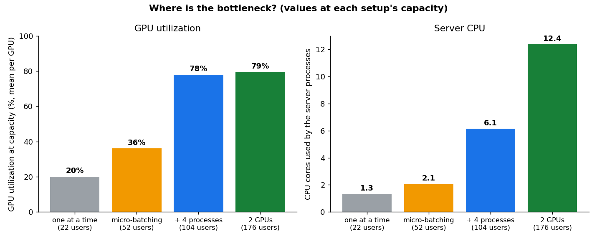
ดูแท่งสีส้ม: Micro-batching อย่างเดียวดัน GPU ได้ 36% เพราะงานอ่านคำขอ ถอด JPEG และแปลงผลยังอยู่บน process เดียว · แบ่งเป็น 4 process แล้ว GPU ขึ้นถึง 78% · CPU ของ server 1.3 → 2.1 → 6.1 core
AI ต้องแก้บั๊กใน server ของตัวเองก่อนจึงได้ 52 และ 104 คนคำตอบจริง
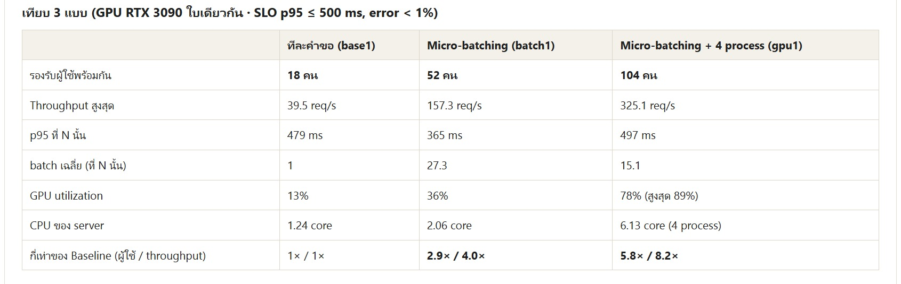
batch1 ได้เพียง 4 คน เพราะ server เรียกโมเดลคนละ thread ทุกครั้ง GPU จึงต้องเตรียมแผนคำนวณใหม่ครั้งละราว 2.65 วินาทีส่วนหนึ่งของคำตอบจริง · เปิดภาพคำตอบเต็ม
Load Balancer + GPU 2 ใบ
AI เปิดระบบแบบ 2 replica (ตัวละ 1 GPU ตัวละ 4 process) หลัง NGINX แล้ววัดซ้ำ ตั้งชื่อผลว่า gpu2
เวลาจริง: ใช้เวลา 9 นาที 18 วินาที · ผลจริง: 1 ใบ 104 คน → 2 ใบ 176 คน (1.69 เท่า, Efficiency 85%)
ขั้นที่ 6: เปิด replica ตัวละ 1 GPU หลัง Load Balancer แล้ววัดซ้ำ
gpu1) · ตั้งชื่อผลว่า gpu2gpu1 ซึ่งใช้สถาปัตยกรรมเดียวกันพรอมต์ · ขั้นที่ 6 · Load Balancer + GPU 2 ใบCopy & Paste
ทำงานใน container `multi-account` โฟลเดอร์ /workspace/vastapp_lab ด้วยสกิล vastai
เครื่องที่ใช้คือเครื่องป้าย vapp-lab6 · กุญแจ SSH อยู่ที่ /workspace/vastai_lab/Devtool_SSH/devtoolSSH
เพิ่ม GPU เป็น 2 ใบ โดยเปิด replica ตัวละ 1 GPU หลัง Load Balancer แล้ววัดความจุซ้ำด้วยวิธีและเกณฑ์ SLO เดิม
ใช้ตัวเปิดระบบและตัวยิงโหลดที่เขียนไว้แล้วใน lab6_image_api/code (อยู่บนเครื่องแล้ว)
1. เปิดระบบแบบ replica 2 ตัว ตัวละ 4 process batch = 32 (แบบเดียวกับ gpu1) แล้ววัด ตั้งชื่อผลว่า gpu2
2. รอบนี้นานราว 4 นาที รันเป็นงานเบื้องหลังแล้วเช็กจนเห็น DONE · เทียบกับผล base1 batch1 gpu1 ที่อยู่บนเครื่อง
สรุปเป็นตารางภาษาไทย: จำนวน GPU | สถาปัตยกรรม | รองรับผู้ใช้พร้อมกัน (N) | Throughput สูงสุด | p95 ที่ N นั้น | เท่าของ 1 ใบ | Efficiency (เท่าของ 1 ใบ ÷ จำนวน GPU)
ใส่ 4 แถว: 1 ใบทีละคำขอ · 1 ใบ Micro-batching · 1 ใบ Micro-batching + 4 process · 2 ใบ (เท่าของ 1 ใบ และ Efficiency เทียบกับแถว gpu1 ซึ่งใช้สถาปัตยกรรมเดียวกัน)
สรุปประโยค "1 ใบ N₁ คน → 2 ใบ N₂ คน (x เท่า, efficiency y%)" และประมาณว่าถ้าเพิ่มเป็น 3 ใบน่าจะได้เท่าไร โดยบอกชัดว่าเป็นการคำนวณ ไม่ใช่ผลวัด
บอกว่าคำขอกระจายไป 2 replica เท่ากันไหม และถ้าไม่เพิ่มเป็น 2 เท่า คอขวดอยู่ที่ไหน (GPU · CPU ของ server · NGINX · ตัวยิงโหลด) แล้วบอกว่าเครื่องยังเปิดอยู่ตรวจผลของคุณ · ขั้นที่ 6 · Load Balancer + GPU 2 ใบChecklist
2 GPU รับได้ 176 คน แต่ตามกติกาเข้มได้ 32 คนresults/gpu2.json
N=64 รอบแรกสะดุดครั้งเดียว: p95 1,752 ms ขณะที่ p50 ยัง 93 ms
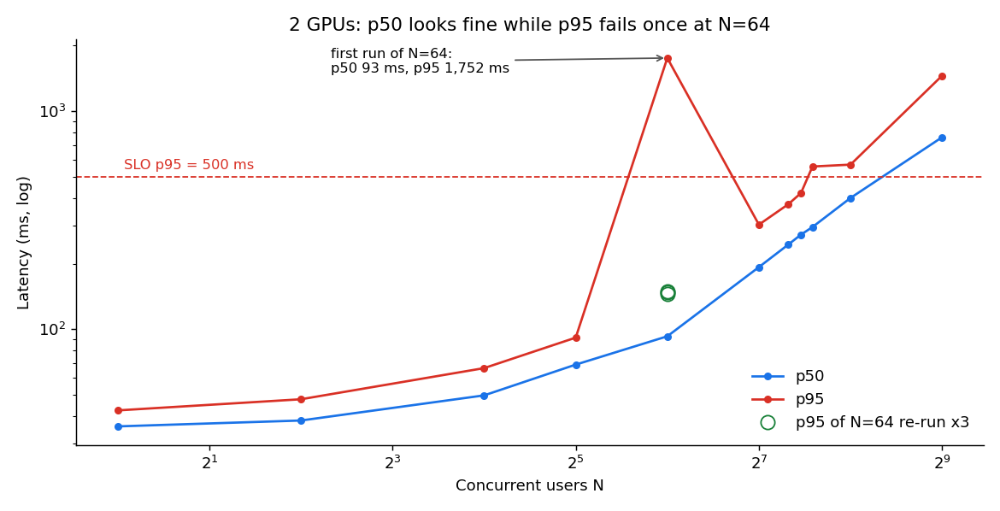
ดูยอดแหลมของเส้นแดงที่ N=64 · วัดซ้ำ 3 ครั้งผ่านหมด (วงกลมเขียว p95 147 / 145 / 149 ms) · ในรอบที่สะดุด GPU ทั้ง 2 ใบตกเหลือราว 30%
Throughput เพิ่ม 2.00 เท่าบนเส้น ideal แต่ความจุเพิ่ม 1.69 เท่า
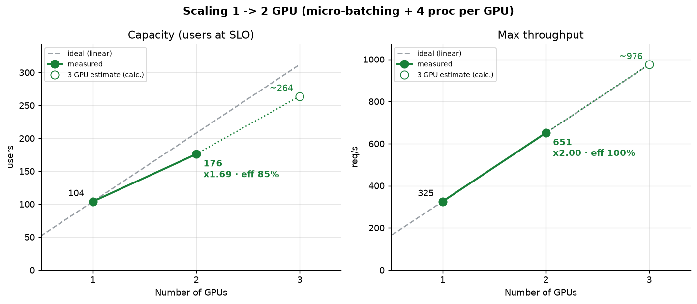
ความจุตัดสินด้วย p95: ที่ 96 คนต่อ GPU ระบบ 2 ใบได้ p95 557 ms เทียบกับ 424 ms ของ 1 ใบ · วงกลมโปร่งที่ 3 ใบเป็น ค่าคำนวณ ไม่ใช่ผลวัด (server จะใช้ CPU ราว 18.5 core)
AI รายงานความจุ 2 ใบทั้ง 2 ค่า: 176 คน และ 32 คนตามกติกาเข้มคำตอบจริง
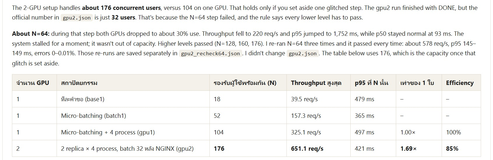
ส่วนหนึ่งของคำตอบจริง · คำตอบขั้นนี้เป็นภาษาอังกฤษ · แถวทีละคำขอในภาพเป็นค่าก่อนวัดซ้ำ · เปิดภาพคำตอบเต็ม
ทดลองเสริม 1: วิธีแจกงานของ Load Balancer
AI เพิ่มตัวเลือกให้ cluster.sh (เลือกวิธีแจกงาน และสั่งให้ replica ที่เลือกช้าลงได้) และให้ server.py หน่วงเวลาได้ แล้ววัด 3 รอบ: lc2, rr_slow, lc_slow
เวลาจริง: ใช้เวลา 23 นาที 42 วินาที · ผลจริง: replica ช้า 1 ตัว: round-robin 32 คน · least_conn 72 คน
ขั้นที่ 7: เทียบวิธีแจกงาน round-robin กับ least_conn
lc2 (เทียบกับ gpu2)rr_slow และ lc_slowพรอมต์ · ขั้นที่ 7 · ทดลองเสริม 1: วิธีแจกงานของ Load BalancerCopy & Paste
ทำงานใน container `multi-account` โฟลเดอร์ /workspace/vastapp_lab ด้วยสกิล vastai
เครื่องที่ใช้คือเครื่องป้าย vapp-lab6 · กุญแจ SSH อยู่ที่ /workspace/vastai_lab/Devtool_SSH/devtoolSSH
เทียบวิธีแจกงานของ Load Balancer กับระบบ 2 replica (ตัวละ 4 process batch = 32) ด้วยตัวยิงโหลดและเกณฑ์ SLO เดิม
1. เพิ่มความสามารถให้ตัวเปิดระบบใน lab6_image_api/code แล้วนำขึ้นเครื่อง: เลือกวิธีแจกงานได้ 2 แบบ คือ round-robin กับ least_conn (ส่งให้ตัวที่งานค้างน้อยที่สุด) และสั่งให้ replica ตัวที่เลือกช้าลงรูปละกี่ ms ได้
2. replica เท่ากัน: เปิดระบบแบบ least_conn แล้ววัดความจุ ตั้งชื่อผลว่า lc2 เพื่อเทียบกับ gpu2 ที่เป็น round-robin
3. replica ไม่เท่ากัน: ให้ replica ตัวที่ 2 ช้าลงรูปละ 40 ms แล้ววัดความจุ 2 รอบ — round-robin ตั้งชื่อผลว่า rr_slow · least_conn ตั้งชื่อผลว่า lc_slow
4. แต่ละรอบนานราว 4 นาที รันเป็นงานเบื้องหลังแล้วเช็กจนเห็น DONE
สรุปเป็นภาษาไทย 2 ตาราง round-robin vs least_conn: (ก) เมื่อ replica เท่ากัน (ข) เมื่อมี replica ช้า 1 ตัว — รองรับผู้ใช้พร้อมกัน · Throughput สูงสุด · p95 ที่ N นั้น · สัดส่วนคำขอที่แต่ละ replica ได้
อธิบายสั้น ๆ ว่าทำไมผลต่างกัน แล้วบอกว่าเครื่องยังเปิดอยู่ตรวจผลของคุณ · ขั้นที่ 7 · ทดลองเสริม 1: วิธีแจกงานของ Load BalancerChecklist
(ข) replica ช้า 1 ตัว: least_conn รับได้ 2.25 เท่าของ round-robinresults/rr_slow · lc_slow
Throughput 169 req/s · GPU 48% / 20%
2.25 เท่า · Throughput 403 req/s (2.4 เท่า) · GPU 82% / 21%
(ก) replica เท่ากัน: 176 คน กับ 256 คน ยังสรุปไม่ได้ว่า least_conn ดีกว่า
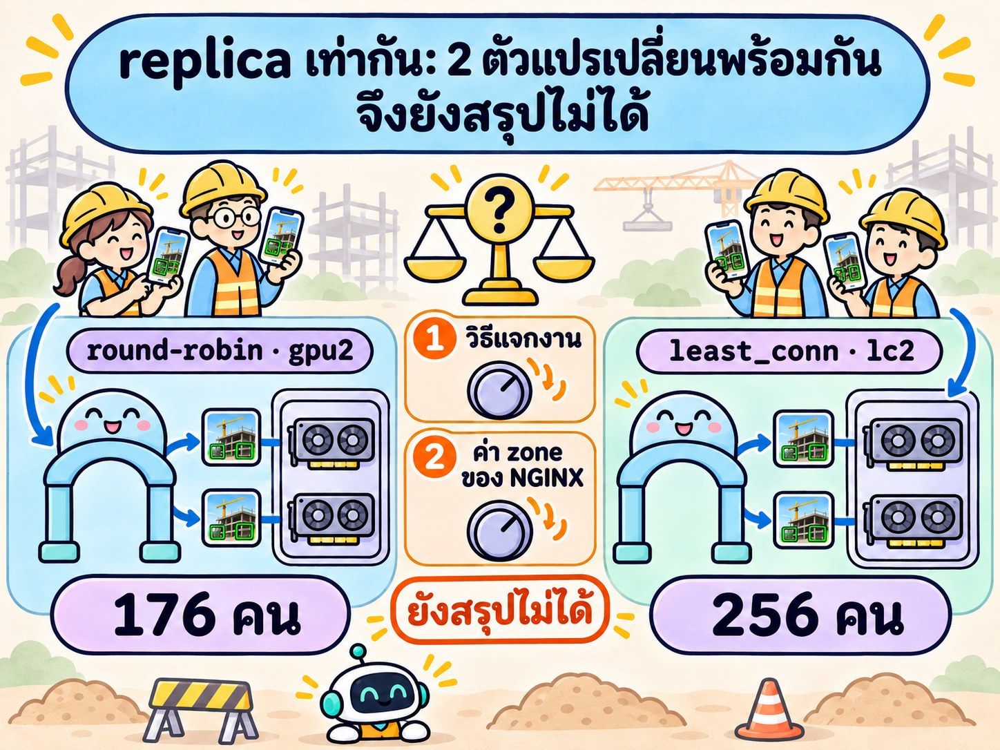
Throughput สูงสุดแทบเท่ากัน (651 req/s กับ 661 req/s) และแบ่งงาน 50 : 50 ทั้งคู่ · ค่า 176 ยังขึ้นกับการวัดซ้ำระดับที่สะดุด (ตามกติกาเข้ม 32) · ต้องวัด round-robin ซ้ำด้วยค่า NGINX ชุดเดียวกันก่อนสรุป
เมื่อมี replica ช้า เส้น least_conn ตัด SLO ที่ 72 คน ส่วน round-robin ตัดที่ 32 คน
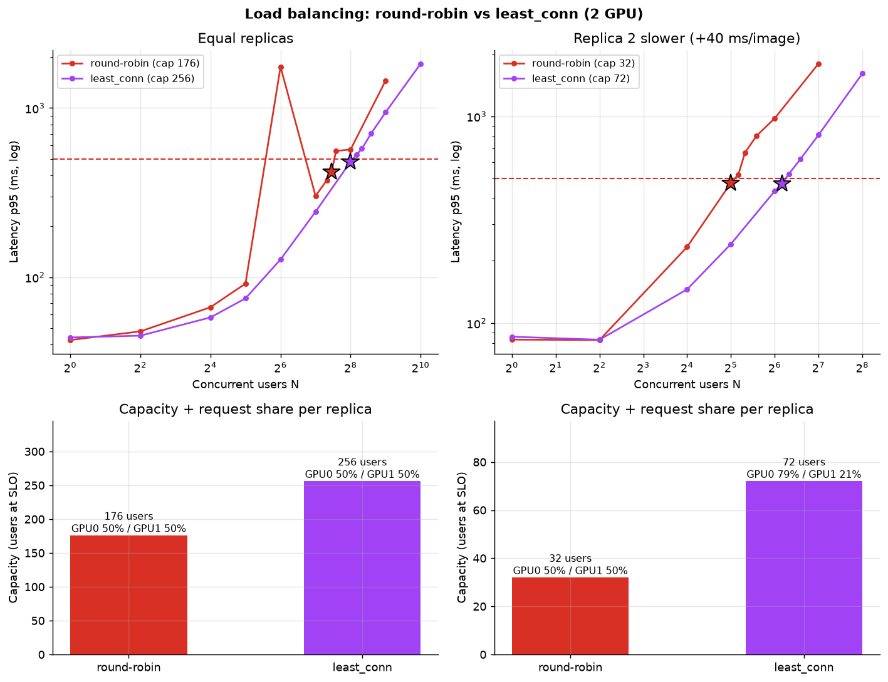
ดูกราฟขวาบน · กราฟซ้ายคือกรณี replica เท่ากัน ซึ่งยังสรุปไม่ได้ · แถวล่างคือความจุและสัดส่วนคำขอของแต่ละ replica
round-robin ยังส่งงานครึ่งหนึ่งให้ replica ที่ช้า ส่วน least_conn ย้ายงานไปตัวเร็วเองคำตอบจริง
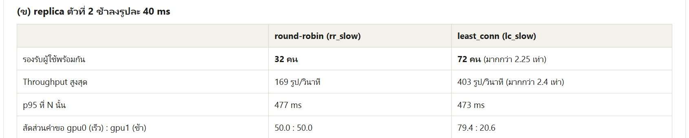
zone ให้ NGINX ในขั้นนี้ ทำให้คู่ (ก) ต่างกัน 2 ตัวแปร หลักที่ต้องใช้คือ เปลี่ยนทีละตัวแปรส่วนหนึ่งของคำตอบจริง · เปิดภาพคำตอบเต็ม
ทดลองเสริม 2: replica ล่มกลางการยิงโหลด
AI เพิ่มคำสั่งปิดกะทันหันและเปิดคืน replica กับตัวเลือกส่งซ้ำของ NGINX ให้ cluster.sh เพิ่มโหมดยิงระดับเดียวที่เก็บผลรายวินาทีให้ loadgen.py และเขียน run_failover.sh รันทั้ง 2 รอบ
เวลาจริง: ใช้เวลา 42 นาที 46 วินาที (AI เจอบั๊กในตัวยิงโหลดและปัญหาโควตา CPU ตอนเปิด replica คืน จึงต้องรันใหม่) · ผลจริง: ไม่ส่งซ้ำ error 36.9% · ส่งซ้ำ error 0
ขั้นที่ 8: ปิด replica ตัวที่ 2 กลางการยิงโหลด แล้วดูว่าผู้ใช้เห็น error หรือไม่
fo_noretry (ไม่ส่งซ้ำ) · fo_retry (ส่งซ้ำ)พรอมต์ · ขั้นที่ 8 · ทดลองเสริม 2: replica ล่มกลางการยิงโหลดCopy & Paste
ทำงานใน container `multi-account` โฟลเดอร์ /workspace/vastapp_lab ด้วยสกิล vastai
เครื่องที่ใช้คือเครื่องป้าย vapp-lab6 · กุญแจ SSH อยู่ที่ /workspace/vastai_lab/Devtool_SSH/devtoolSSH
ดูว่าเมื่อ replica 1 ตัวล่มกลางทาง ระบบ 2 replica (ตัวละ 4 process batch = 32 แจกงานแบบ round-robin) ยังตอบผู้ใช้ได้ไหม
1. เพิ่มความสามารถให้โค้ดใน lab6_image_api/code แล้วนำขึ้นเครื่อง: ตัวเปิดระบบสั่งปิดกะทันหันและเปิดคืน replica ทีละตัวได้ และเลือกได้ว่า NGINX จะส่งคำขอที่ล้มไปให้ replica อื่นหรือไม่
2. ตัวยิงโหลดมีโหมดยิงระดับเดียว เก็บผลรายวินาที (คำขอที่สำเร็จแยกตาม replica, error, p95) และสั่งคำสั่งตามวินาทีที่กำหนดระหว่างยิงได้
3. ยิงด้วยผู้ใช้พร้อมกันเท่ากับหนึ่งในสามของความจุ 2 ใบ (จากผล gpu2) นาน 45 วินาที ปิด replica ตัวที่ 2 ที่วินาทีที่ 15 แล้วเปิดคืนที่วินาทีที่ 30
4. ทำ 2 รอบ: รอบที่ NGINX ไม่ส่งซ้ำ ตั้งชื่อผลว่า fo_noretry · รอบที่ NGINX ส่งซ้ำ ตั้งชื่อผลว่า fo_retry
สรุปเป็นตารางภาษาไทยเทียบ 2 รอบ: จำนวน error จากคำขอทั้งหมด · Throughput ก่อนล่ม / ระหว่างล่ม / หลังเปิดคืน · p95 ช่วงที่แย่ที่สุด · ใช้กี่วินาทีจน replica ที่เปิดคืนกลับมารับงาน
แล้วบอกว่าเครื่องยังเปิดอยู่ตรวจผลของคุณ · ขั้นที่ 8 · ทดลองเสริม 2: replica ล่มกลางการยิงโหลดChecklist
เมื่อ NGINX ส่งซ้ำ ผู้ใช้ไม่เห็น error เลยresults/fo_noretry · fo_retry
36.9% · 502 และ 503 · Throughput ก่อน / ระหว่าง / หลัง 258 / 187 / 178 req/s
Throughput ก่อน / ระหว่าง / หลัง 263 / 190 / 186 req/s
คำขอรายวินาที: รอบไม่ส่งซ้ำมีแท่ง error สีแดงต่อเนื่อง รอบส่งซ้ำไม่มีเลย
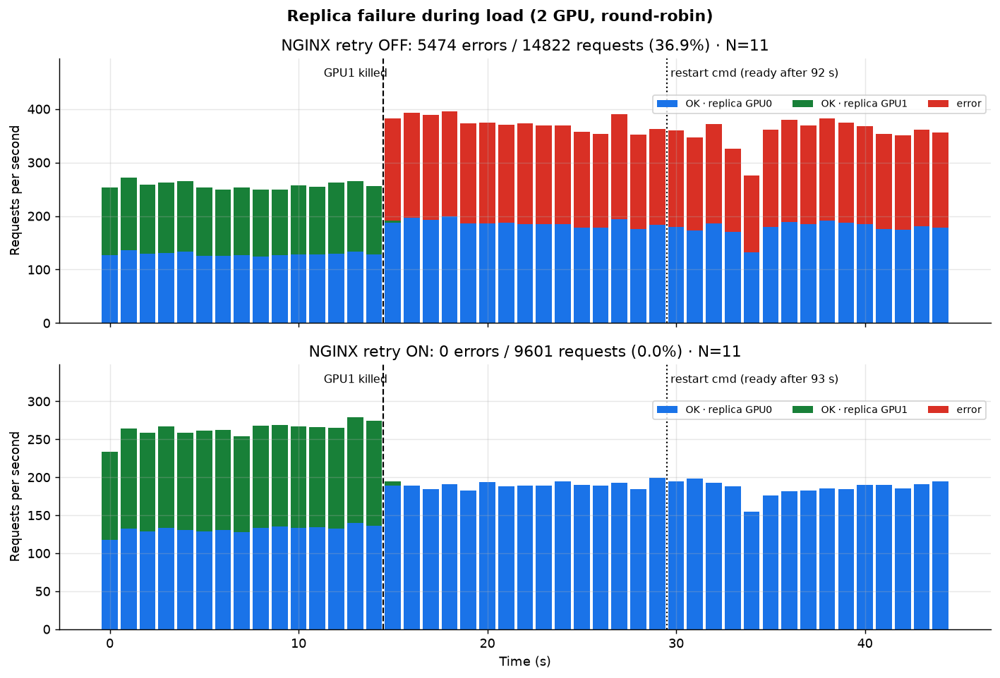
error ในรอบไม่ส่งซ้ำไม่ลดลงตามเวลา เพราะโค้ดรอบนี้ตั้ง max_fails=0 NGINX จึงยังแจกงานให้ตัวที่ล่ม · ระบบจริงควรมีทั้ง health check ที่ตัดตัวล่มออก และ retry
ทั้ง 2 รอบ replica ที่เปิดคืนใช้ราว 92 วินาทีกว่าจะกลับมารับงานคำตอบจริง
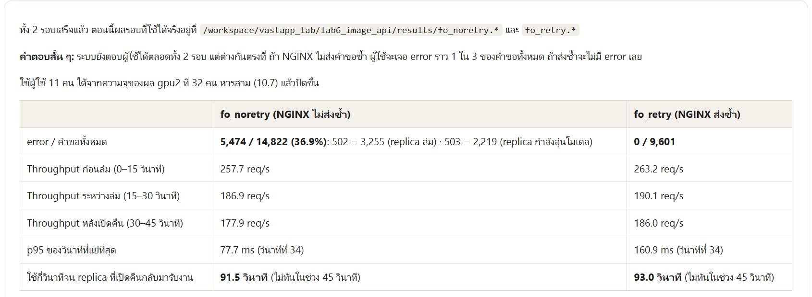
ส่วนหนึ่งของคำตอบจริง · AI ต้องรันใหม่หลังแก้บั๊ก ขั้นนี้จึงใช้เวลา 42 นาที 46 วินาที · เปิดภาพคำตอบเต็ม
ทำกราฟ เก็บผล ลบเครื่อง และสรุปค่าใช้จ่าย
ห้ามข้าม · AI เขียน report.py รวมผลทุกชุดเป็น metrics.json กับกราฟ 5 ภาพ คัดลอกผลและโค้ดกลับมา แล้วลบเครื่อง
เวลาจริง: ใช้เวลา 5 นาที · ผลจริง: เครื่องเปิด 2 ชั่วโมง 40 นาที · ค่าเช่าตามบิล $1.02
ขั้นที่ 9: ทำกราฟ เก็บผล แล้วลบเครื่อง
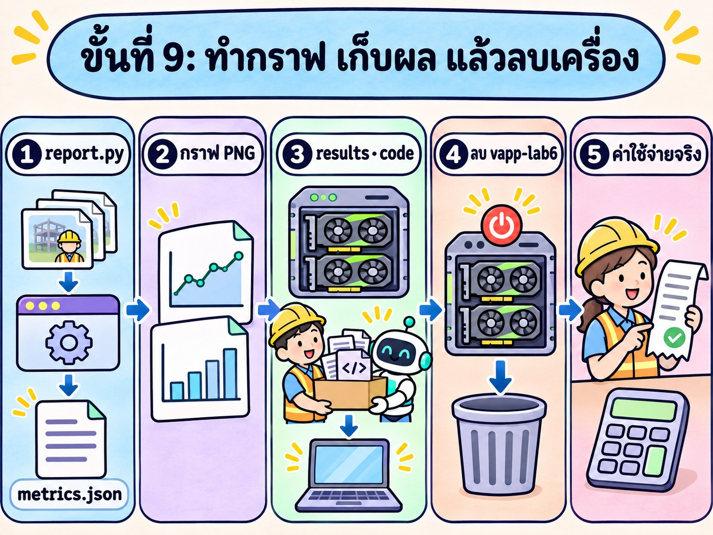
report.py อ่านผลทุกชุด (base1 batch1 gpu1 gpu2 lc2 rr_slow lc_slow fo_noretry fo_retry) รวมเป็น metrics.jsonvapp-lab6 ตรวจว่าไม่มีค้าง แล้วสรุป ค่าใช้จ่ายจริงพรอมต์ · ขั้นที่ 9 · ทำกราฟ เก็บผล ลบเครื่อง และสรุปค่าใช้จ่ายCopy & Paste
ทำงานใน container `multi-account` โฟลเดอร์ /workspace/vastapp_lab ด้วยสกิล vastai
เครื่องที่ใช้คือเครื่องป้าย vapp-lab6 · กุญแจ SSH อยู่ที่ /workspace/vastai_lab/Devtool_SSH/devtoolSSH
ปิดงาน LAB 6: ทำกราฟจากผลจริง เก็บผลกลับ แล้วลบเครื่อง
1. เขียนตัวทำรายงานไว้ที่ lab6_image_api/code/report.py อ่านไฟล์ผลทุกชื่อ (base1 batch1 gpu1 gpu2 lc2 rr_slow lc_slow fo_noretry fo_retry) แล้วรวมตัวเลขสำคัญเป็น metrics.json
2. วาดกราฟ PNG ป้ายภาษาอังกฤษสั้น ๆ ชุดหลัก: Latency p95 เทียบ N ของ 4 แบบ พร้อมเส้น SLO และจุดความจุ · Throughput เทียบ N · ความจุและ Throughput สูงสุดเทียบจำนวน GPU พร้อมเส้น ideal และ Efficiency
3. กราฟชุดเสริม: round-robin เทียบ least_conn (replica เท่ากัน และมีตัวช้า) · Throughput รายวินาทีตอน replica ล่ม แยกสีตาม replica และ error
4. รันบนเครื่อง แล้วเก็บกลับมาไว้ในโฟลเดอร์ของบทบนเครื่องนี้ให้ครบ: ผลทั้งหมดที่ lab6_image_api/results และโค้ดทุกไฟล์ที่ lab6_image_api/code ตรวจว่ามาครบและเปิดดูกราฟว่าอ่านออก
5. ลบเครื่องป้าย vapp-lab6 แล้วตรวจว่าไม่มีเครื่องป้ายนี้ค้างในบัญชี (ห้ามแตะเครื่องป้ายอื่น)
สรุปเป็นภาษาไทย: ตาราง จำนวน GPU | สถาปัตยกรรม | รองรับผู้ใช้พร้อมกัน | Throughput สูงสุด | p95 ที่ N นั้น | เท่าของ 1 ใบ | Efficiency
ประโยค "1 ใบ N₁ คน → 2 ใบ N₂ คน (x เท่า, efficiency y%)" · ประมาณการ 3 ใบ (บอกว่าเป็นการคำนวณ) · รายชื่อกราฟ
และค่าใช้จ่ายจริงของเครื่อง vapp-lab6: อายุเครื่อง · ราคาต่อชั่วโมง · ยอดที่ถูกคิดตรวจผลของคุณ · ขั้นที่ 9 · ทำกราฟ เก็บผล ลบเครื่อง และสรุปค่าใช้จ่ายChecklist
ทั้ง LAB ใช้เงินราว $1README · ขั้นที่ 9
vapp-lab6 ค้างในบัญชีตารางสุดท้ายรายงานความจุ 2 ใบทั้ง 2 ค่า และใช้ Baseline 22 คนที่วัดซ้ำคำตอบจริง
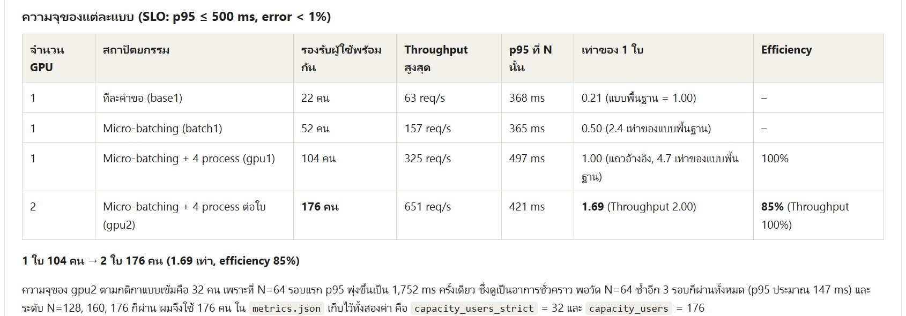
ส่วนหนึ่งของคำตอบจริง · AI อ่านค่าใช้จ่ายได้ $1.011 · กราฟ 5 ภาพอยู่ในภาพคำตอบเต็ม · เปิดภาพคำตอบเต็ม
เก็บงานทั้ง LAB เป็นสกิลเวอร์ชัน 0
เราเพิ่งสั่งงาน 9 ขั้นจนสำเร็จ ถ้าต้องวัดซ้ำ (เช่น เปลี่ยนรุ่น GPU หรือโมเดล) ไม่ควรต้องวาง 9 พรอมต์และให้ AI เขียนโค้ดกับแก้บั๊กใหม่ทุกครั้ง · สกิล คือโฟลเดอร์ที่เก็บวิธีทำงานที่สำเร็จแล้ว (SKILL.md) พร้อมโค้ดที่ใช้ได้แล้ว (scripts/) ให้ AI ทำซ้ำได้ในคำสั่งเดียว
สร้างสกิลเวอร์ชัน 0 จากงานที่เพิ่งทำ
AI อ่านพรอมต์ โค้ด และผลของ LAB แล้วเขียนเป็นสกิล gpu-api-capacity พร้อมเก็บโค้ด 11 ไฟล์เข้า scripts/
เวลาจริง: ใช้เวลา 6 นาที 12 วินาที · ผลจริง: สกิล gpu-api-capacity · SKILL.md + scripts 11 ไฟล์ · ไม่ต้องเช่าเครื่อง
ขั้นที่ 10: AI อ่านพรอมต์ โค้ด และผลของ LAB แล้วเขียนเป็นสกิล

PROMPTS.md · โค้ดใน code/ · ผลใน results/gpu-api-capacity ที่ skill_v0/SKILL.md มี name และ descriptionskill_v0/scripts แล้วติดตั้งที่ .claude/skills/gpu-api-capacityพรอมต์ · ขั้นที่ 10 · สร้างสกิลเวอร์ชัน 0 จากงานที่เพิ่งทำCopy & Paste
สรุปงาน LAB 6 ที่เพิ่งทำ เป็นสกิลเวอร์ชัน 0 ไว้สั่งทำซ้ำได้ในคำสั่งเดียว
1. ดูพรอมต์ทุกขั้นใน lab6_image_api/PROMPTS.md โค้ดที่ใช้ได้แล้วใน lab6_image_api/code และผลใน lab6_image_api/results
2. สร้างสกิลชื่อ gpu-api-capacity ไว้ที่ lab6_image_api/skill_v0/SKILL.md มี name และ description ที่บอกว่าใช้เมื่อไร
3. ในสกิลต้องมี: ค่าที่ผู้ใช้ปรับได้พร้อมค่าเริ่มต้น (รุ่นและจำนวน GPU · เพดานราคา · ป้ายเครื่อง · เกณฑ์ SLO · ระดับ N · แบบที่จะวัด) · ขั้นตอน · เกณฑ์ตรวจผ่าน · กติกาเรื่องเงิน (ลบเครื่องเสมอ และสรุปค่าใช้จ่าย)
4. เก็บโค้ดที่พิสูจน์แล้วเข้าไปในสกิลที่ lab6_image_api/skill_v0/scripts รอบหน้าจะได้ไม่ต้องเขียนใหม่ · สกิลนี้เรียกใช้สกิล vastai ต่อ ไม่เขียนทับ
5. ติดตั้งสกิลให้ Claude Code ใช้ได้ที่ .claude/skills/gpu-api-capacity ของโฟลเดอร์ปัจจุบัน
สรุป: โครงของสกิล · ค่าที่ปรับได้และค่าเริ่มต้น · รายชื่อไฟล์ที่เก็บเข้าไปตรวจผลของคุณ · ขั้นที่ 10 · สร้างสกิลเวอร์ชัน 0 จากงานที่เพิ่งทำChecklist
ได้สกิล gpu-api-capacity ที่มี SKILL.md กับ scripts 11 ไฟล์ และเกณฑ์ตรวจผ่านจากรอบจริงคำตอบจริง
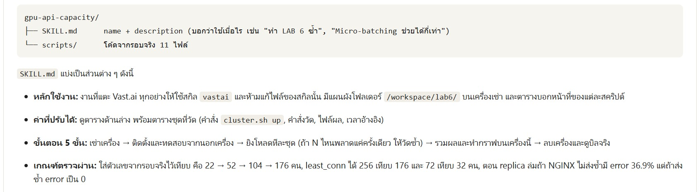
ส่วนหนึ่งของคำตอบจริง · เปิดภาพคำตอบเต็ม
ลองใช้สกิลเวอร์ชัน 0 ทำซ้ำแบบย่อ
AI ตัวใหม่ทำตามสกิล: เช่าเครื่อง ติดตั้ง ทดสอบ API วัด 2 แบบ ทำกราฟ ลบเครื่อง และอ่านบิล โดยใช้โค้ดใน scripts/ ไม่ต้องเขียนใหม่
เวลาจริง: ใช้เวลา 16 นาที 49 วินาที · ผลจริง: 1 พรอมต์ · 17 นาที · $0.10 · 2 GPU ได้ 192 คน
ขั้นที่ 11: สกิล v0 ทำซ้ำได้ในคำสั่งเดียว
gpu-api-capacity บน RTX 3090 2 ใบ ป้าย vapp-lab6-skillscripts/ ไม่ต้องเขียนใหม่: เช่า ติดตั้ง ทดสอบ APIresults_skill ลบเครื่อง แล้วเทียบกับผลรอบหลักและค่าใช้จ่ายจริงพรอมต์ · ขั้นที่ 11 · ลองใช้สกิลเวอร์ชัน 0 ทำซ้ำแบบย่อCopy & Paste
ใช้สกิล gpu-api-capacity วัดความจุของ API ตรวจภาพแบบย่อบนเครื่อง RTX 3090 2 ใบ ราคารวมไม่เกิน $0.60 ต่อชั่วโมง ตั้งป้ายเครื่องว่า vapp-lab6-skill
วัดแค่ 2 แบบ: GPU 1 ใบแบบพื้นฐาน (ทีละคำขอ) กับ GPU 2 ใบแบบ Micro-batching + 4 process · ไล่ N แค่ 16, 64, 128, 256, 512 ไม่ต้องทำการทดลองเสริม
เก็บผลไว้ที่ lab6_image_api/results_skill แล้วลบเครื่อง สรุปตารางความจุของ 2 แบบ เทียบกับผลรอบหลักใน lab6_image_api/results และค่าใช้จ่ายจริงตรวจผลของคุณ · ขั้นที่ 11 · ลองใช้สกิลเวอร์ชัน 0 ทำซ้ำแบบย่อChecklist
สั่งทีละขั้น 9 พรอมต์ เทียบกับสกิล v0 คำสั่งเดียวตารางหลัก
| สั่งทีละขั้น (ขั้นที่ 1–9) | สกิล v0 คำสั่งเดียว (แบบย่อ 2 ชุด) | |
|---|---|---|
| จำนวนพรอมต์ | 9 | 1 |
| ต้องเขียนหรือแก้โค้ด | ทุกขั้น (และเจอบั๊ก 3 จุด) | ไม่ต้อง ใช้โค้ดใน scripts/ |
| เวลาติดตั้งจนพร้อมวัด | ราว 35 นาที (ขั้นที่ 1–3) | 5.3 นาที |
| เวลารวม | ราว 2 ชั่วโมง 40 นาที | 17 นาที (เครื่องเปิด 14 นาที) |
| ความจุ: 1 GPU ทีละคำขอ | 22 คน · 63 req/s | 28 คน · 61 req/s · p95 484 ms |
| ความจุ: 2 GPU Micro-batching + 4 process | 176 คน · 651 req/s (ตามกติกาเข้ม 32) | 192 คน · 660 req/s · p95 452 ms (ไม่มีการสะดุดที่ N=64) |
| ค่าเช่า | $1.02 | $0.10 |
สกิล v0 ผ่านในรอบแรก: 1 GPU ทีละคำขอ 28 คน และ 2 GPU 192 คนคำตอบจริง
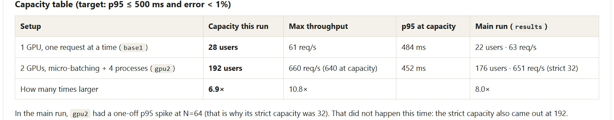
ส่วนหนึ่งของคำตอบจริง · คำตอบเป็นภาษาอังกฤษ · เครื่องเปิดรวม 14.4 นาที AI อ่านค่าใช้จ่ายได้ $0.097 · เปิดภาพคำตอบเต็ม
สกิล v0 ยังไม่สมบูรณ์: 6 จุดที่ควรแก้ในเวอร์ชันถัดไปREADME · ขั้นที่ 11
ระดับ N ที่หยาบทำให้ความจุ Baseline ออกมาเป็น 28 แทน 22 ทั้งที่ Throughput เท่ากัน
v1: กำหนดความละเอียดขั้นต่ำของช่วงซอยครึ่ง หรือให้รายงานความจุเป็นช่วง
ถ้าผู้ใช้ไม่ขอชุด 1 ใบ Micro-batching + 4 process สกิลจะเทียบ 2 ใบกับ Baseline ตรง ๆ และไม่มี Efficiency กับประมาณการ 3 ใบ
v1: บังคับวัดชุดนี้เสมอเมื่อจะรายงาน Efficiency
กราฟของ report.py วางป้ายเส้น SLO ชิดซ้ายเกินไปเมื่อมีแค่ 2 ชุด
v1: ปรับตำแหน่งป้ายตามจำนวนชุดที่มี
สรุปของรอบสกิลออกมาเป็นภาษาอังกฤษ
v1: ระบุในสกิลว่า "สรุปเป็นภาษาไทย"
เกณฑ์ตรวจผ่านผูกกับตัวเลขของ RTX 3090 รอบเดียว (22 → 52 → 104 → 176)
v1: เขียนเป็นช่วงหรืออัตราส่วนแทนค่าตายตัว
เปิด replica คืนใช้ราว 92 วินาที (อุ่นทุกขนาด batch) ติดมากับโค้ด
v1: อุ่นเฉพาะขนาด batch ที่ใช้บ่อย หรือเปิด replica สำรองรอไว้
ทีละคำขอ 22 คน → 2 GPU 176 คน
ผลรวม · ตารางสรุป · บทเรียน · ข้อจำกัด
เส้น p95 ของ 4 แบบตัดเส้น SLO 500 ms ที่ 22, 52, 104 และ 176 คน
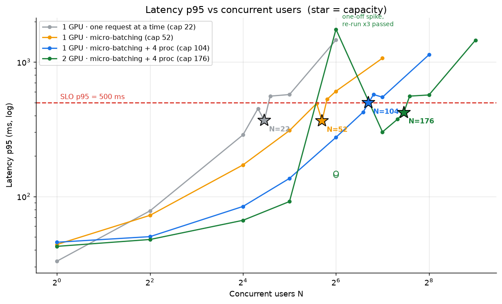
ดาวคือความจุของแต่ละแบบ · ยอดแหลมของ 2 GPU ที่ N=64 คือการสะดุดครั้งเดียว ซึ่งวัดซ้ำ 3 ครั้งแล้วผ่าน
ตารางสรุปของทั้ง LAB: 1 ใบ 104 คน → 2 ใบ 176 คน (1.69 เท่า, Efficiency 85%)ตารางหลัก
| จำนวน GPU | สถาปัตยกรรม | รองรับผู้ใช้พร้อมกัน (N) | Throughput สูงสุด | p95 ที่ N นั้น | เท่าของ 1 ใบ | Efficiency |
|---|---|---|---|---|---|---|
| 1 | Baseline: ทีละคำขอ · 1 process | 22 | 63 req/s | 368 ms | 0.21× | – |
| 1 | Micro-batching · 1 process | 52 | 157 req/s | 365 ms | 0.50× | – |
| 1 | Micro-batching + 4 process | 104 | 325 req/s | 497 ms | 1.00× | 100% |
| 2 | Micro-batching + 4 process ใบละชุด หลัง NGINX round-robin | 176 ¹ | 651 req/s | 421 ms | 1.69× (Throughput 2.00×) | 85% (Throughput 100%) |
| 3 | คำนวณ ไม่ใช่ผลวัด | ≈ 264 | ≈ 976 req/s | – | – | – |
บทเรียนของ LAB นี้: ปรับใบเดิมให้เต็มก่อน แล้วจึงเพิ่ม GPU
Micro-batching + 4 process ได้ 4.7 เท่าโดยค่าเช่าเท่าเดิม ส่วน GPU ใบที่ 2 ได้ 1.69 เท่า แต่จ่ายเพิ่ม 2 เท่า
ข้อจำกัด: สิ่งที่ LAB นี้ยังไม่ได้พิสูจน์
ความจุ 2 ใบมี 2 ค่า
ตามกติกาเข้มได้ 32 คน · ค่า 176 มาจากการวัดซ้ำระดับที่สะดุด และมีความละเอียดเพียงช่วงซอยครึ่ง 16 คน
3 ใบเป็นการคำนวณ
เครื่องนี้มี 2 GPU จึงวัดไม่ได้ · ใช้สมมติฐานว่า Efficiency และ CPU ยังพอ
replica เท่ากัน: ยังสรุปไม่ได้
round-robin กับ least_conn ต่างกัน 2 ตัวแปร (วิธีแจกงานและค่า zone)
Failover ทดสอบที่โหลดเบา
ยังไม่ได้ทดสอบว่าเมื่อโหลดใกล้ความจุแล้วเหลือ GPU ใบเดียวจะยังผ่าน SLO หรือไม่
ทุกส่วนอยู่บนเครื่องเดียว
ระบบจริงต้องบวกเวลาเครือข่ายระหว่างเครื่อง และ Load Balancer ต้องมีตัวสำรอง
ตัวเลขของโค้ดรอบนี้
รูปมีแค่ 6 รูปขนาดเท่ากัน · ของคุณจะได้ตัวเลขไม่เท่านี้ แต่ลำดับควรเหมือนกัน
ถัดไป: สั่งปรับสกิลเป็น v1 ตามตาราง แล้วใช้ซ้ำ
รายละเอียดเต็มของบทนี้: README.md · พรอมต์ทั้งหมด: PROMPTS.md